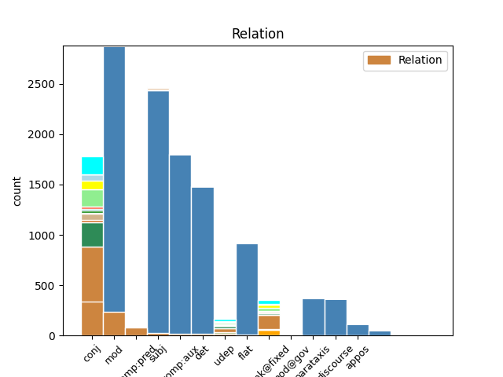
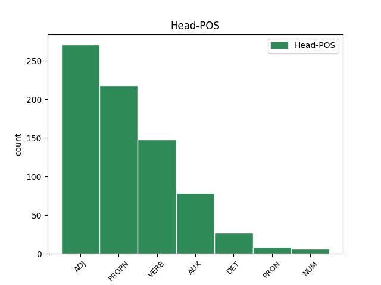
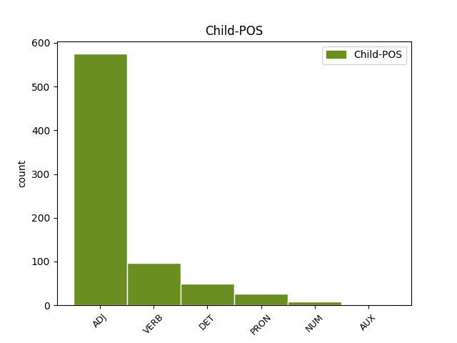

Distribution of features within this leaf



Agreement Rules sorted by frequency.
- When the dependent token is the conjunct(conj) of the head token, and the head token is ADJ and the dependent token is ADJ.
1 Međutim _ _ _ _ 0 _ _ _
2 , _ _ _ _ 0 _ _ _
3 kao _ _ _ _ 0 _ _ _
4 što _ _ _ _ 0 _ _ _
5 lagano _ _ _ _ 0 _ _ _
6 , _ _ _ _ 0 _ _ _
7 ali _ _ _ _ 0 _ _ _
8 sigurno _ _ _ _ 0 _ _ _
9 napreduje _ _ _ _ 0 _ _ _
10 širenje _ _ _ _ 0 _ _ _
11 nuklearnih _ _ _ _ 0 _ _ _
12 centrala _ _ _ _ 0 _ _ _
13 po _ _ _ _ 0 _ _ _
14 svetu _ _ _ _ 0 _ _ _
15 usred _ _ _ _ 0 _ _ _
16 ekonomske _ _ _ _ 0 _ _ _
17 isplativosti _ _ _ _ 0 _ _ _
18 dogod _ _ _ _ 0 _ _ _
19 nema _ _ _ _ 0 _ _ _
20 akcidenata _ _ _ _ 0 _ _ _
21 , _ _ _ _ 0 _ _ _
22 tako _ _ _ _ 0 _ _ _
23 će _ _ _ _ 0 _ _ _
24 barem _ _ _ _ 0 _ _ _
25 zasad _ _ _ _ 0 _ _ _
26 i _ _ _ _ 0 _ _ _
27 Internet _ _ _ _ 0 _ _ _
28 stvari _ _ _ _ 0 _ _ _
29 nastaviti _ _ _ _ 0 _ _ _
30 da _ _ _ _ 0 _ _ _
31 postaje _ _ _ _ 0 _ _ _
32 realnost _ _ _ _ 0 _ _ _
33 , _ _ _ _ 0 _ _ _
34 dobrim _ _ _ _ 0 _ _ _
35 delom _ _ _ _ 0 _ _ _
36 i _ _ _ _ 0 _ _ _
37 zato _ _ _ _ 0 _ _ _
38 što _ _ _ _ 0 _ _ _
39 su _ _ _ _ 0 _ _ _
40 mlađe _ _ _ _ 0 _ _ _
41 generacije _ _ _ _ 0 _ _ _
42 već _ _ _ _ 0 _ _ _
43 od _ _ _ _ 0 _ _ _
44 malena _ _ _ _ 0 _ _ _
45 okružene okružiti ADJ Appfpny Case=Nom|Definite=Def|Degree=Pos|Gender=Fem|Number=Plur|VerbForm=Part|Voice=Pass 0 _ _ _
46 takvim _ _ _ _ 0 _ _ _
47 tehnološkim _ _ _ _ 0 _ _ _
48 konceptom _ _ _ _ 0 _ _ _
49 , _ _ _ _ 0 _ _ _
50 pa _ _ _ _ 0 _ _ _
51 i _ _ _ _ 0 _ _ _
52 delimično _ _ _ _ 0 _ _ _
53 integrisane integrisati ADJ Appfpny Case=Nom|Definite=Def|Degree=Pos|Gender=Fem|Number=Plur|VerbForm=Part|Voice=Pass 45 conj _ _
54 u _ _ _ _ 0 _ _ _
55 njega _ _ _ _ 0 _ _ _
56 . _ _ _ _ 0 _ _ _
1 Satima _ _ _ _ 0 _ _ _
2 sam _ _ _ _ 0 _ _ _
3 šetao _ _ _ _ 0 _ _ _
4 starim star ADJ Agpmsiy Case=Ins|Definite=Def|Degree=Pos|Gender=Masc|Number=Sing 5 mod _ _
5 Trstom Trst PROPN Npmsi Case=Ins|Gender=Masc|Number=Sing 0 _ _ _
6 u _ _ _ _ 0 _ _ _
7 nadi _ _ _ _ 0 _ _ _
8 da _ _ _ _ 0 _ _ _
9 ću _ _ _ _ 0 _ _ _
10 uhvatiti _ _ _ _ 0 _ _ _
11 senku _ _ _ _ 0 _ _ _
12 Zena _ _ _ _ 0 _ _ _
13 Kozima _ _ _ _ 0 _ _ _
14 . _ _ _ _ 0 _ _ _
1 Koliko _ _ _ _ 0 _ _ _
2 puta _ _ _ _ 0 _ _ _
3 sam _ _ _ _ 0 _ _ _
4 uzimao uzimati VERB Vmp-sm Gender=Masc|Number=Sing|Tense=Past|VerbForm=Part|Voice=Act 0 _ _ _
5 u _ _ _ _ 0 _ _ _
6 ruke _ _ _ _ 0 _ _ _
7 knjigu _ _ _ _ 0 _ _ _
8 koja _ _ _ _ 0 _ _ _
9 mi _ _ _ _ 0 _ _ _
10 je _ _ _ _ 0 _ _ _
11 u _ _ _ _ 0 _ _ _
12 nekom _ _ _ _ 0 _ _ _
13 periodu _ _ _ _ 0 _ _ _
14 života _ _ _ _ 0 _ _ _
15 određivala _ _ _ _ 0 _ _ _
16 meru _ _ _ _ 0 _ _ _
17 sveta _ _ _ _ 0 _ _ _
18 , _ _ _ _ 0 _ _ _
19 i _ _ _ _ 0 _ _ _
20 onda _ _ _ _ 0 _ _ _
21 , _ _ _ _ 0 _ _ _
22 čitajući _ _ _ _ 0 _ _ _
23 je _ _ _ _ 0 _ _ _
24 ponovo _ _ _ _ 0 _ _ _
25 , _ _ _ _ 0 _ _ _
26 uzalud _ _ _ _ 0 _ _ _
27 iščekivao iščekivati VERB Vmp-sm Gender=Masc|Number=Sing|Tense=Past|VerbForm=Part|Voice=Act 4 conj _ _
28 uznemirenje _ _ _ _ 0 _ _ _
29 . _ _ _ _ 0 _ _ _
1 Je _ _ _ _ 0 _ _ _
2 li _ _ _ _ 0 _ _ _
3 Huver _ _ _ _ 0 _ _ _
4 bio biti AUX Vap-sm Gender=Masc|Number=Sing|Tense=Past|VerbForm=Part|Voice=Act 0 _ _ _
5 apolitičan apolitičan ADJ Agpmsnn Case=Nom|Definite=Ind|Degree=Pos|Gender=Masc|Number=Sing 4 comp:pred _ _
6 kada _ _ _ _ 0 _ _ _
7 je _ _ _ _ 0 _ _ _
8 smišljeno _ _ _ _ 0 _ _ _
9 širio _ _ _ _ 0 _ _ _
10 antikomunističku _ _ _ _ 0 _ _ _
11 histeriju _ _ _ _ 0 _ _ _
12 da _ _ _ _ 0 _ _ _
13 bi _ _ _ _ 0 _ _ _
14 lakše _ _ _ _ 0 _ _ _
15 stvorio _ _ _ _ 0 _ _ _
16 političku _ _ _ _ 0 _ _ _
17 klimu _ _ _ _ 0 _ _ _
18 u _ _ _ _ 0 _ _ _
19 kojoj _ _ _ _ 0 _ _ _
20 bi _ _ _ _ 0 _ _ _
21 sudovi _ _ _ _ 0 _ _ _
22 smekšali _ _ _ _ 0 _ _ _
23 stav _ _ _ _ 0 _ _ _
24 prema _ _ _ _ 0 _ _ _
25 njegovim _ _ _ _ 0 _ _ _
26 metodama _ _ _ _ 0 _ _ _
27 obaveštajnog _ _ _ _ 0 _ _ _
28 rada _ _ _ _ 0 _ _ _
29 , _ _ _ _ 0 _ _ _
30 koje _ _ _ _ 0 _ _ _
31 su _ _ _ _ 0 _ _ _
32 suviše _ _ _ _ 0 _ _ _
33 često _ _ _ _ 0 _ _ _
34 podrazumevale _ _ _ _ 0 _ _ _
35 nezakonite _ _ _ _ 0 _ _ _
36 pretrese _ _ _ _ 0 _ _ _
37 i _ _ _ _ 0 _ _ _
38 prisluškivanja _ _ _ _ 0 _ _ _
39 , _ _ _ _ 0 _ _ _
40 dosijee _ _ _ _ 0 _ _ _
41 seksualnih _ _ _ _ 0 _ _ _
42 navika _ _ _ _ 0 _ _ _
43 i _ _ _ _ 0 _ _ _
44 podmetanje _ _ _ _ 0 _ _ _
45 lažnih _ _ _ _ 0 _ _ _
46 dokaza _ _ _ _ 0 _ _ _
47 tokom _ _ _ _ 0 _ _ _
48 ilegalnih _ _ _ _ 0 _ _ _
49 premetačina _ _ _ _ 0 _ _ _
50 ? _ _ _ _ 0 _ _ _
1 Najprizemniji _ _ _ _ 0 _ _ _
2 primer _ _ _ _ 0 _ _ _
3 ove _ _ _ _ 0 _ _ _
4 opasnosti _ _ _ _ 0 _ _ _
5 je _ _ _ _ 0 _ _ _
6 skandal _ _ _ _ 0 _ _ _
7 iz _ _ _ _ 0 _ _ _
8 2014. _ _ _ _ 0 _ _ _
9 kada _ _ _ _ 0 _ _ _
10 su _ _ _ _ 0 _ _ _
11 ukradeni _ _ _ _ 0 _ _ _
12 i _ _ _ _ 0 _ _ _
13 objavljeni _ _ _ _ 0 _ _ _
14 privatni _ _ _ _ 0 _ _ _
15 obnaženi _ _ _ _ 0 _ _ _
16 selfiji _ _ _ _ 0 _ _ _
17 poznatih _ _ _ _ 0 _ _ _
18 osoba _ _ _ _ 0 _ _ _
19 iz _ _ _ _ 0 _ _ _
20 sveta _ _ _ _ 0 _ _ _
21 filma _ _ _ _ 0 _ _ _
22 i _ _ _ _ 0 _ _ _
23 pop _ _ _ _ 0 _ _ _
24 kulture _ _ _ _ 0 _ _ _
25 , _ _ _ _ 0 _ _ _
26 koji _ _ _ _ 0 _ _ _
27 su _ _ _ _ 0 _ _ _
28 bili biti AUX Vap-pm Gender=Masc|Number=Plur|Tense=Past|VerbForm=Part|Voice=Act 0 _ _ _
29 pohranjeni pohraniti ADJ Appmpny Case=Nom|Definite=Def|Degree=Pos|Gender=Masc|Number=Plur|VerbForm=Part|Voice=Pass 28 comp:aux _ _
30 na _ _ _ _ 0 _ _ _
31 oblaku _ _ _ _ 0 _ _ _
32 podataka _ _ _ _ 0 _ _ _
33 u _ _ _ _ 0 _ _ _
34 koji _ _ _ _ 0 _ _ _
35 su _ _ _ _ 0 _ _ _
36 hakeri _ _ _ _ 0 _ _ _
37 upali _ _ _ _ 0 _ _ _
1 Ulica _ _ _ _ 0 _ _ _
2 u _ _ _ _ 0 _ _ _
3 kojoj _ _ _ _ 0 _ _ _
4 smo _ _ _ _ 0 _ _ _
5 odrasli _ _ _ _ 0 _ _ _
6 , _ _ _ _ 0 _ _ _
7 i _ _ _ _ 0 _ _ _
8 koju _ _ _ _ 0 _ _ _
9 smo _ _ _ _ 0 _ _ _
10 napustili _ _ _ _ 0 _ _ _
11 , _ _ _ _ 0 _ _ _
12 da _ _ _ _ 0 _ _ _
13 bismo _ _ _ _ 0 _ _ _
14 se _ _ _ _ 0 _ _ _
15 nakon _ _ _ _ 0 _ _ _
16 tri _ _ _ _ 0 _ _ _
17 , _ _ _ _ 0 _ _ _
18 ili _ _ _ _ 0 _ _ _
19 četiri _ _ _ _ 0 _ _ _
20 decenije _ _ _ _ 0 _ _ _
21 ponovo _ _ _ _ 0 _ _ _
22 vratili _ _ _ _ 0 _ _ _
23 , _ _ _ _ 0 _ _ _
24 nije _ _ _ _ 0 _ _ _
25 ista _ _ _ _ 0 _ _ _
26 ulica _ _ _ _ 0 _ _ _
27 , _ _ _ _ 0 _ _ _
28 zatrpana _ _ _ _ 0 _ _ _
29 je _ _ _ _ 0 _ _ _
30 životima _ _ _ _ 0 _ _ _
31 koji _ _ _ _ 0 _ _ _
32 su _ _ _ _ 0 _ _ _
33 se _ _ _ _ 0 _ _ _
34 odvijali _ _ _ _ 0 _ _ _
35 u _ _ _ _ 0 _ _ _
36 našem _ _ _ _ 0 _ _ _
37 odsustvu _ _ _ _ 0 _ _ _
38 , _ _ _ _ 0 _ _ _
39 i _ _ _ _ 0 _ _ _
40 zalud _ _ _ _ 0 _ _ _
41 ćemo _ _ _ _ 0 _ _ _
42 u _ _ _ _ 0 _ _ _
43 detalju _ _ _ _ 0 _ _ _
44 sa _ _ _ _ 0 _ _ _
45 fasade _ _ _ _ 0 _ _ _
46 neke _ _ _ _ 0 _ _ _
47 kuće _ _ _ _ 0 _ _ _
48 koji _ _ _ _ 0 _ _ _
49 je _ _ _ _ 0 _ _ _
50 ostao ostati VERB Vmp-sm Gender=Masc|Number=Sing|Tense=Past|VerbForm=Part|Voice=Act 0 _ _ _
51 nepromenjen nepromenjen ADJ Agpmsnn Case=Nom|Definite=Ind|Degree=Pos|Gender=Masc|Number=Sing 50 comp:pred _ SpaceAfter=No
52 , _ _ _ _ 0 _ _ _
53 i _ _ _ _ 0 _ _ _
54 lebdi _ _ _ _ 0 _ _ _
55 u _ _ _ _ 0 _ _ _
56 bezmerju _ _ _ _ 0 _ _ _
57 našeg _ _ _ _ 0 _ _ _
58 pamćenja _ _ _ _ 0 _ _ _
59 kao _ _ _ _ 0 _ _ _
60 parče _ _ _ _ 0 _ _ _
61 jarbola _ _ _ _ 0 _ _ _
62 nakon _ _ _ _ 0 _ _ _
63 brodoloma _ _ _ _ 0 _ _ _
64 , _ _ _ _ 0 _ _ _
65 pokušavati _ _ _ _ 0 _ _ _
66 da _ _ _ _ 0 _ _ _
67 uspostavimo _ _ _ _ 0 _ _ _
68 ulicu _ _ _ _ 0 _ _ _
69 koje _ _ _ _ 0 _ _ _
70 više _ _ _ _ 0 _ _ _
71 nema _ _ _ _ 0 _ _ _
72 . _ _ _ _ 0 _ _ _
1 Vratio _ _ _ _ 0 _ _ _
2 se _ _ _ _ 0 _ _ _
3 makartizam _ _ _ _ 0 _ _ _
4 , _ _ _ _ 0 _ _ _
5 samo _ _ _ _ 0 _ _ _
6 su _ _ _ _ 0 _ _ _
7 progonitelji _ _ _ _ 0 _ _ _
8 sada _ _ _ _ 0 _ _ _
9 iz _ _ _ _ 0 _ _ _
10 liberalne _ _ _ _ 0 _ _ _
11 elite _ _ _ _ 0 _ _ _
12 i _ _ _ _ 0 _ _ _
13 oni _ _ _ _ 0 _ _ _
14 kontrolišu _ _ _ _ 0 _ _ _
15 frakciju _ _ _ _ 0 _ _ _
16 u _ _ _ _ 0 _ _ _
17 državi _ _ _ _ 0 _ _ _
18 koja koji DET Pi-fsn Case=Nom|Gender=Fem|Number=Sing|PronType=Int,Rel 20 subj _ _
19 se _ _ _ _ 0 _ _ _
20 otela oteti VERB Vmp-sf Gender=Fem|Number=Sing|Tense=Past|VerbForm=Part|Voice=Act 0 _ _ _
21 od _ _ _ _ 0 _ _ _
22 države _ _ _ _ 0 _ _ _
23 i _ _ _ _ 0 _ _ _
24 bori _ _ _ _ 0 _ _ _
25 se _ _ _ _ 0 _ _ _
26 protiv _ _ _ _ 0 _ _ _
27 izabrane _ _ _ _ 0 _ _ _
28 vlasti _ _ _ _ 0 _ _ _
29 . _ _ _ _ 0 _ _ _
1 Klempererove _ _ _ _ 0 _ _ _
2 analize _ _ _ _ 0 _ _ _
3 pokazuju _ _ _ _ 0 _ _ _
4 da _ _ _ _ 0 _ _ _
5 je _ _ _ _ 0 _ _ _
6 jezik _ _ _ _ 0 _ _ _
7 nacista _ _ _ _ 0 _ _ _
8 „ _ _ _ _ 0 _ _ _
9 sadržajno _ _ _ _ 0 _ _ _
10 i _ _ _ _ 0 _ _ _
11 izražajno _ _ _ _ 0 _ _ _
12 ” _ _ _ _ 0 _ _ _
13 veoma _ _ _ _ 0 _ _ _
14 siromašan siromašan ADJ Agpmsnn Case=Nom|Definite=Ind|Degree=Pos|Gender=Masc|Number=Sing 0 _ _ _
15 , _ _ _ _ 0 _ _ _
16 oskudan _ _ _ _ 0 _ _ _
17 , _ _ _ _ 0 _ _ _
18 sveden svesti ADJ Appmsnn Case=Nom|Definite=Ind|Degree=Pos|Gender=Masc|Number=Sing|VerbForm=Part|Voice=Pass 14 mod _ _
19 na _ _ _ _ 0 _ _ _
20 demagogiju _ _ _ _ 0 _ _ _
21 i _ _ _ _ 0 _ _ _
22 propagandu _ _ _ _ 0 _ _ _
23 . _ _ _ _ 0 _ _ _
1 Kod _ _ _ _ 0 _ _ _
2 Agate _ _ _ _ 0 _ _ _
3 Kristi _ _ _ _ 0 _ _ _
4 , _ _ _ _ 0 _ _ _
5 na _ _ _ _ 0 _ _ _
6 primer _ _ _ _ 0 _ _ _
7 , _ _ _ _ 0 _ _ _
8 rešiti _ _ _ _ 0 _ _ _
9 slučaj _ _ _ _ 0 _ _ _
10 znači _ _ _ _ 0 _ _ _
11 sačuvati _ _ _ _ 0 _ _ _
12 postojeći _ _ _ _ 0 _ _ _
13 politički _ _ _ _ 0 _ _ _
14 poredak _ _ _ _ 0 _ _ _
15 , _ _ _ _ 0 _ _ _
16 a _ _ _ _ 0 _ _ _
17 samim sam ADJ Agpnsiy Case=Ins|Definite=Def|Degree=Pos|Gender=Neut|Number=Sing 18 mod _ _
18 tim taj DET Pd-nsi Case=Ins|Gender=Neut|Number=Sing|PronType=Dem 0 _ _ _
19 i _ _ _ _ 0 _ _ _
20 državu _ _ _ _ 0 _ _ _
21 . _ _ _ _ 0 _ _ _
1 Tri _ _ _ _ 0 _ _ _
2 istraživačko-dokumentaciona _ _ _ _ 0 _ _ _
3 centra _ _ _ _ 0 _ _ _
4 iz _ _ _ _ 0 _ _ _
5 Srbije Srbija PROPN Npfsg Case=Gen|Gender=Fem|Number=Sing 0 _ _ _
6 i _ _ _ _ 0 _ _ _
7 Crne crn ADJ Agpfsgy Case=Gen|Definite=Def|Degree=Pos|Gender=Fem|Number=Sing 5 flat _ _
8 Gore _ _ _ _ 0 _ _ _
9 , _ _ _ _ 0 _ _ _
10 Bosne _ _ _ _ 0 _ _ _
11 i _ _ _ _ 0 _ _ _
12 Hercegovine _ _ _ _ 0 _ _ _
13 ( _ _ _ _ 0 _ _ _
14 BiH _ _ _ _ 0 _ _ _
15 ) _ _ _ _ 0 _ _ _
16 i _ _ _ _ 0 _ _ _
17 Hrvatske _ _ _ _ 0 _ _ _
18 planiraju _ _ _ _ 0 _ _ _
19 da _ _ _ _ 0 _ _ _
20 osnuju _ _ _ _ 0 _ _ _
21 trajnu _ _ _ _ 0 _ _ _
22 regionalnu _ _ _ _ 0 _ _ _
23 letnju _ _ _ _ 0 _ _ _
24 školu _ _ _ _ 0 _ _ _
25 . _ _ _ _ 0 _ _ _
1 Novi _ _ _ _ 0 _ _ _
2 pregovori _ _ _ _ 0 _ _ _
3 biće _ _ _ _ 0 _ _ _
4 održani _ _ _ _ 0 _ _ _
5 pod _ _ _ _ 0 _ _ _
6 okriljem _ _ _ _ 0 _ _ _
7 šestočlane _ _ _ _ 0 _ _ _
8 Kontakt _ _ _ _ 0 _ _ _
9 grupe _ _ _ _ 0 _ _ _
10 koju _ _ _ _ 0 _ _ _
11 čine _ _ _ _ 0 _ _ _
12 Britanija _ _ _ _ 0 _ _ _
13 , _ _ _ _ 0 _ _ _
14 Francuska _ _ _ _ 0 _ _ _
15 , _ _ _ _ 0 _ _ _
16 Nemačka _ _ _ _ 0 _ _ _
17 , _ _ _ _ 0 _ _ _
18 Italija _ _ _ _ 0 _ _ _
19 , _ _ _ _ 0 _ _ _
20 Rusija Rusija PROPN Npfsn Case=Nom|Gender=Fem|Number=Sing 0 _ _ _
21 i _ _ _ _ 0 _ _ _
22 Sjedinjene sjedinjen ADJ Agpfpny Case=Nom|Definite=Def|Degree=Pos|Gender=Fem|Number=Plur 20 conj _ _
23 Države _ _ _ _ 0 _ _ _
24 , _ _ _ _ 0 _ _ _
25 a _ _ _ _ 0 _ _ _
26 koja _ _ _ _ 0 _ _ _
27 je _ _ _ _ 0 _ _ _
28 zadužila _ _ _ _ 0 _ _ _
29 trojicu _ _ _ _ 0 _ _ _
30 diplomata _ _ _ _ 0 _ _ _
31 -- _ _ _ _ 0 _ _ _
32 američkog _ _ _ _ 0 _ _ _
33 izaslanika _ _ _ _ 0 _ _ _
34 za _ _ _ _ 0 _ _ _
35 Kosovo _ _ _ _ 0 _ _ _
36 Frenka _ _ _ _ 0 _ _ _
37 Viznera _ _ _ _ 0 _ _ _
38 , _ _ _ _ 0 _ _ _
39 ruskog _ _ _ _ 0 _ _ _
40 izaslanika _ _ _ _ 0 _ _ _
41 Aleksandra _ _ _ _ 0 _ _ _
42 Bocan-Harčenka _ _ _ _ 0 _ _ _
43 i _ _ _ _ 0 _ _ _
44 Nemca _ _ _ _ 0 _ _ _
45 Volfganga _ _ _ _ 0 _ _ _
46 Išingera _ _ _ _ 0 _ _ _
47 , _ _ _ _ 0 _ _ _
48 koji _ _ _ _ 0 _ _ _
49 predstavlja _ _ _ _ 0 _ _ _
50 EU _ _ _ _ 0 _ _ _
51 -- _ _ _ _ 0 _ _ _
52 za _ _ _ _ 0 _ _ _
53 posredovanje _ _ _ _ 0 _ _ _
54 u _ _ _ _ 0 _ _ _
55 tom _ _ _ _ 0 _ _ _
56 procesu _ _ _ _ 0 _ _ _
57 . _ _ _ _ 0 _ _ _
1 Ne _ _ _ _ 0 _ _ _
2 bi _ _ _ _ 0 _ _ _
3 bilo _ _ _ _ 0 _ _ _
4 dobro _ _ _ _ 0 _ _ _
5 da _ _ _ _ 0 _ _ _
6 se _ _ _ _ 0 _ _ _
7 i _ _ _ _ 0 _ _ _
8 kod _ _ _ _ 0 _ _ _
9 nas _ _ _ _ 0 _ _ _
10 dogodi _ _ _ _ 0 _ _ _
11 ono _ _ _ _ 0 _ _ _
12 što što PRON Pi3n-n Case=Nom|Gender=Neut|PronType=Int,Rel 14 subj _ _
13 se _ _ _ _ 0 _ _ _
14 desilo desiti VERB Vmp-sn Gender=Neut|Number=Sing|Tense=Past|VerbForm=Part|Voice=Act 0 _ _ _
15 u _ _ _ _ 0 _ _ _
16 SAD _ _ _ _ 0 _ _ _
17 , _ _ _ _ 0 _ _ _
18 a _ _ _ _ 0 _ _ _
19 to _ _ _ _ 0 _ _ _
20 je _ _ _ _ 0 _ _ _
21 da _ _ _ _ 0 _ _ _
22 ljudi _ _ _ _ 0 _ _ _
23 i _ _ _ _ 0 _ _ _
24 dalje _ _ _ _ 0 _ _ _
25 nastavljaju _ _ _ _ 0 _ _ _
26 izbornu _ _ _ _ 0 _ _ _
27 kampanju _ _ _ _ 0 _ _ _
28 iako _ _ _ _ 0 _ _ _
29 je _ _ _ _ 0 _ _ _
30 sve _ _ _ _ 0 _ _ _
31 već _ _ _ _ 0 _ _ _
32 završeno _ _ _ _ 0 _ _ _
33 . _ _ _ _ 0 _ _ _
1 Jedan _ _ _ _ 0 _ _ _
2 od _ _ _ _ 0 _ _ _
3 pionirskih _ _ _ _ 0 _ _ _
4 koraka _ _ _ _ 0 _ _ _
5 na _ _ _ _ 0 _ _ _
6 putu _ _ _ _ 0 _ _ _
7 ka _ _ _ _ 0 _ _ _
8 Internetu _ _ _ _ 0 _ _ _
9 stvari _ _ _ _ 0 _ _ _
10 napravljen _ _ _ _ 0 _ _ _
11 je _ _ _ _ 0 _ _ _
12 još _ _ _ _ 0 _ _ _
13 davne _ _ _ _ 0 _ _ _
14 1982. _ _ _ _ 0 _ _ _
15 kada _ _ _ _ 0 _ _ _
16 je _ _ _ _ 0 _ _ _
17 na _ _ _ _ 0 _ _ _
18 Karnegi _ _ _ _ 0 _ _ _
19 univerzitetu _ _ _ _ 0 _ _ _
20 u _ _ _ _ 0 _ _ _
21 Pensilvaniji _ _ _ _ 0 _ _ _
22 uspešno _ _ _ _ 0 _ _ _
23 umrežen _ _ _ _ 0 _ _ _
24 automat _ _ _ _ 0 _ _ _
25 za _ _ _ _ 0 _ _ _
26 koka-kolu _ _ _ _ 0 _ _ _
27 sa _ _ _ _ 0 _ _ _
28 kompjuterima _ _ _ _ 0 _ _ _
29 univerziteta _ _ _ _ 0 _ _ _
30 tako _ _ _ _ 0 _ _ _
31 da _ _ _ _ 0 _ _ _
32 je _ _ _ _ 0 _ _ _
33 svaki svaki DET Pi-msn Case=Nom|Gender=Masc|Number=Sing|PronType=Tot 34 det _ _
34 zaposleni zaposlen ADJ Agpmsny Case=Nom|Definite=Def|Degree=Pos|Gender=Masc|Number=Sing 0 _ _ _
35 mogao _ _ _ _ 0 _ _ _
36 da _ _ _ _ 0 _ _ _
37 vidi _ _ _ _ 0 _ _ _
38 preko _ _ _ _ 0 _ _ _
39 računara _ _ _ _ 0 _ _ _
40 koje _ _ _ _ 0 _ _ _
41 dugme _ _ _ _ 0 _ _ _
42 na _ _ _ _ 0 _ _ _
43 automatu _ _ _ _ 0 _ _ _
44 treba _ _ _ _ 0 _ _ _
45 pritisnuti _ _ _ _ 0 _ _ _
46 da _ _ _ _ 0 _ _ _
47 bi _ _ _ _ 0 _ _ _
48 se _ _ _ _ 0 _ _ _
49 dobila _ _ _ _ 0 _ _ _
50 najrashlađenija _ _ _ _ 0 _ _ _
51 boca _ _ _ _ 0 _ _ _
52 u _ _ _ _ 0 _ _ _
53 mašini _ _ _ _ 0 _ _ _
54 . _ _ _ _ 0 _ _ _
1 I _ _ _ _ 0 _ _ _
2 sve sav ADJ Agpnsny Case=Nom|Definite=Def|Degree=Pos|Gender=Neut|Number=Sing 4 mod _ _
3 mi _ _ _ _ 0 _ _ _
4 nešto nešto PRON Pi3n-n Case=Nom|Gender=Neut|PronType=Ind 0 _ _ _
5 ta _ _ _ _ 0 _ _ _
6 slika _ _ _ _ 0 _ _ _
7 poznata _ _ _ _ 0 _ _ _
8 , _ _ _ _ 0 _ _ _
9 kao _ _ _ _ 0 _ _ _
10 da _ _ _ _ 0 _ _ _
11 sam _ _ _ _ 0 _ _ _
12 je _ _ _ _ 0 _ _ _
13 negde _ _ _ _ 0 _ _ _
14 video _ _ _ _ 0 _ _ _
15 . _ _ _ _ 0 _ _ _
1 Sve sav DET Agpnsny Case=Nom|Definite=Def|Degree=Pos|Gender=Neut|Number=Sing 2 det _ _
2 ovo ovaj DET Pd-nsn Case=Nom|Gender=Neut|Number=Sing|PronType=Dem 0 _ _ _
3 bila _ _ _ _ 0 _ _ _
4 je _ _ _ _ 0 _ _ _
5 posledica _ _ _ _ 0 _ _ _
6 nemarnosti _ _ _ _ 0 _ _ _
7 firme _ _ _ _ 0 _ _ _
8 Insteon _ _ _ _ 0 _ _ _
9 koja _ _ _ _ 0 _ _ _
10 je _ _ _ _ 0 _ _ _
11 ugradila _ _ _ _ 0 _ _ _
12 pametne _ _ _ _ 0 _ _ _
13 senzore _ _ _ _ 0 _ _ _
14 u _ _ _ _ 0 _ _ _
15 kuću _ _ _ _ 0 _ _ _
16 bez _ _ _ _ 0 _ _ _
17 odgovarajuće _ _ _ _ 0 _ _ _
18 zaštite _ _ _ _ 0 _ _ _
19 za _ _ _ _ 0 _ _ _
20 starije _ _ _ _ 0 _ _ _
21 verzije _ _ _ _ 0 _ _ _
22 svojih _ _ _ _ 0 _ _ _
23 proizvoda _ _ _ _ 0 _ _ _
24 . _ _ _ _ 0 _ _ _
1 Burkaj _ _ _ _ 0 _ _ _
2 je _ _ _ _ 0 _ _ _
3 kritikovao _ _ _ _ 0 _ _ _
4 glavni _ _ _ _ 0 _ _ _
5 kurdski _ _ _ _ 0 _ _ _
6 pokret _ _ _ _ 0 _ _ _
7 zbog _ _ _ _ 0 _ _ _
8 toga taj DET Pd-nsg Case=Gen|Gender=Neut|Number=Sing|PronType=Dem 0 _ _ _
9 što što PRON Pi3n-n Case=Nom|Gender=Neut|PronType=Int,Rel 8 unk@fixed _ _
10 nije _ _ _ _ 0 _ _ _
11 podržao _ _ _ _ 0 _ _ _
12 tursku _ _ _ _ 0 _ _ _
13 vladu _ _ _ _ 0 _ _ _
14 u _ _ _ _ 0 _ _ _
15 njenom _ _ _ _ 0 _ _ _
16 " _ _ _ _ 0 _ _ _
17 otvaranju _ _ _ _ 0 _ _ _
18 prema _ _ _ _ 0 _ _ _
19 Kurdima _ _ _ _ 0 _ _ _
20 " _ _ _ _ 0 _ _ _
21 , _ _ _ _ 0 _ _ _
22 koje _ _ _ _ 0 _ _ _
23 je _ _ _ _ 0 _ _ _
24 u _ _ _ _ 0 _ _ _
25 velikoj _ _ _ _ 0 _ _ _
26 meri _ _ _ _ 0 _ _ _
27 zaustavljeno _ _ _ _ 0 _ _ _
28 od _ _ _ _ 0 _ _ _
29 kako _ _ _ _ 0 _ _ _
30 je _ _ _ _ 0 _ _ _
31 započeto _ _ _ _ 0 _ _ _
32 pre _ _ _ _ 0 _ _ _
33 skoro _ _ _ _ 0 _ _ _
34 dve _ _ _ _ 0 _ _ _
35 godine _ _ _ _ 0 _ _ _
36 . _ _ _ _ 0 _ _ _
1 " _ _ _ _ 0 _ _ _
2 Trenutno _ _ _ _ 0 _ _ _
3 je _ _ _ _ 0 _ _ _
4 prvi prvi NUM Mlomsn Case=Nom|Degree=Pos|Gender=Masc|Number=Sing 0 _ _ _
5 i _ _ _ _ 0 _ _ _
6 glavni glavni ADJ Agpmsny Case=Nom|Definite=Def|Degree=Pos|Gender=Masc|Number=Sing 4 conj _ _
7 prioritet _ _ _ _ 0 _ _ _
8 Rumunije _ _ _ _ 0 _ _ _
9 pripremiti _ _ _ _ 0 _ _ _
10 se _ _ _ _ 0 _ _ _
11 za _ _ _ _ 0 _ _ _
12 članstvo _ _ _ _ 0 _ _ _
13 [ _ _ _ _ 0 _ _ _
14 u _ _ _ _ 0 _ _ _
15 EU _ _ _ _ 0 _ _ _
16 ] _ _ _ _ 0 _ _ _
17 , _ _ _ _ 0 _ _ _
18 posebno _ _ _ _ 0 _ _ _
19 kada _ _ _ _ 0 _ _ _
20 je _ _ _ _ 0 _ _ _
21 u _ _ _ _ 0 _ _ _
22 pitanju _ _ _ _ 0 _ _ _
23 implementacija _ _ _ _ 0 _ _ _
24 neophodnih _ _ _ _ 0 _ _ _
25 reformi _ _ _ _ 0 _ _ _
26 u _ _ _ _ 0 _ _ _
27 pravosuđu _ _ _ _ 0 _ _ _
28 i _ _ _ _ 0 _ _ _
29 borba _ _ _ _ 0 _ _ _
30 protiv _ _ _ _ 0 _ _ _
31 korupcije _ _ _ _ 0 _ _ _
32 " _ _ _ _ 0 _ _ _
33 , _ _ _ _ 0 _ _ _
34 izjavio _ _ _ _ 0 _ _ _
35 je _ _ _ _ 0 _ _ _
36 Ren _ _ _ _ 0 _ _ _
37 . _ _ _ _ 0 _ _ _
1 Doris _ _ _ _ 0 _ _ _
2 Lesing _ _ _ _ 0 _ _ _
3 izražava _ _ _ _ 0 _ _ _
4 strepnju _ _ _ _ 0 _ _ _
5 sličnu sličan ADJ Agpfsay Case=Acc|Definite=Def|Degree=Pos|Gender=Fem|Number=Sing 0 _ _ _
6 onoj onaj DET Pd-fsd Case=Dat|Gender=Fem|Number=Sing|PronType=Dem 5 udep _ _
7 koja _ _ _ _ 0 _ _ _
8 je _ _ _ _ 0 _ _ _
9 postojala _ _ _ _ 0 _ _ _
10 i _ _ _ _ 0 _ _ _
11 u _ _ _ _ 0 _ _ _
12 starom _ _ _ _ 0 _ _ _
13 Egiptu _ _ _ _ 0 _ _ _
14 . _ _ _ _ 0 _ _ _
1 Jedan jedan NUM Mlcmsn Case=Nom|Gender=Masc|Number=Sing|NumType=Card 2 mod _ _
2 Srbin Srbin PROPN Npmsn Case=Nom|Gender=Masc|Number=Sing 0 _ _ _
3 je _ _ _ _ 0 _ _ _
4 poginuo _ _ _ _ 0 _ _ _
5 , _ _ _ _ 0 _ _ _
6 a _ _ _ _ 0 _ _ _
7 dvojica _ _ _ _ 0 _ _ _
8 su _ _ _ _ 0 _ _ _
9 ranjena _ _ _ _ 0 _ _ _
10 nakon _ _ _ _ 0 _ _ _
11 što _ _ _ _ 0 _ _ _
12 su _ _ _ _ 0 _ _ _
13 se _ _ _ _ 0 _ _ _
14 u _ _ _ _ 0 _ _ _
15 sredu _ _ _ _ 0 _ _ _
16 ( _ _ _ _ 0 _ _ _
17 9. _ _ _ _ 0 _ _ _
18 novembra _ _ _ _ 0 _ _ _
19 ) _ _ _ _ 0 _ _ _
20 grupe _ _ _ _ 0 _ _ _
21 Albanaca _ _ _ _ 0 _ _ _
22 i _ _ _ _ 0 _ _ _
23 Srba _ _ _ _ 0 _ _ _
24 sukobile _ _ _ _ 0 _ _ _
25 u _ _ _ _ 0 _ _ _
26 naselju _ _ _ _ 0 _ _ _
27 Brđani _ _ _ _ 0 _ _ _
28 na _ _ _ _ 0 _ _ _
29 severu _ _ _ _ 0 _ _ _
30 Kosova _ _ _ _ 0 _ _ _
31 . _ _ _ _ 0 _ _ _
1 Tanov Tanov PROPN Npmsn Case=Nom|Gender=Masc|Number=Sing 0 _ _ _
2 , _ _ _ _ 0 _ _ _
3 koji _ _ _ _ 0 _ _ _
4 se _ _ _ _ 0 _ _ _
5 nekada _ _ _ _ 0 _ _ _
6 nalazio nalaziti VERB Vmp-sm Gender=Masc|Number=Sing|Tense=Past|VerbForm=Part|Voice=Act 1 mod _ _
7 na _ _ _ _ 0 _ _ _
8 čelu _ _ _ _ 0 _ _ _
9 jedinice _ _ _ _ 0 _ _ _
10 za _ _ _ _ 0 _ _ _
11 borbu _ _ _ _ 0 _ _ _
12 protiv _ _ _ _ 0 _ _ _
13 organizovanog _ _ _ _ 0 _ _ _
14 kriminala _ _ _ _ 0 _ _ _
15 , _ _ _ _ 0 _ _ _
16 tvrdi _ _ _ _ 0 _ _ _
17 da _ _ _ _ 0 _ _ _
18 je _ _ _ _ 0 _ _ _
19 Petkov _ _ _ _ 0 _ _ _
20 postigao _ _ _ _ 0 _ _ _
21 dogovor _ _ _ _ 0 _ _ _
22 sa _ _ _ _ 0 _ _ _
23 biznismenima _ _ _ _ 0 _ _ _
24 iz _ _ _ _ 0 _ _ _
25 Dupnice _ _ _ _ 0 _ _ _
26 kojim _ _ _ _ 0 _ _ _
27 je _ _ _ _ 0 _ _ _
28 definisan _ _ _ _ 0 _ _ _
29 delokrug _ _ _ _ 0 _ _ _
30 njihovog _ _ _ _ 0 _ _ _
31 rada _ _ _ _ 0 _ _ _
32 i _ _ _ _ 0 _ _ _
33 koji _ _ _ _ 0 _ _ _
34 je _ _ _ _ 0 _ _ _
35 utvrdio _ _ _ _ 0 _ _ _
36 ono _ _ _ _ 0 _ _ _
37 što _ _ _ _ 0 _ _ _
38 će _ _ _ _ 0 _ _ _
39 pripasti _ _ _ _ 0 _ _ _
40 Zlatomiru _ _ _ _ 0 _ _ _
41 Ivanovu _ _ _ _ 0 _ _ _
42 , _ _ _ _ 0 _ _ _
43 zvanom _ _ _ _ 0 _ _ _
44 " _ _ _ _ 0 _ _ _
45 Beretka _ _ _ _ 0 _ _ _
46 " _ _ _ _ 0 _ _ _
47 , _ _ _ _ 0 _ _ _
48 još _ _ _ _ 0 _ _ _
49 jednoj _ _ _ _ 0 _ _ _
50 važnoj _ _ _ _ 0 _ _ _
51 ličnosti _ _ _ _ 0 _ _ _
52 iz _ _ _ _ 0 _ _ _
53 bugarskog _ _ _ _ 0 _ _ _
54 podzemlja _ _ _ _ 0 _ _ _
55 . _ _ _ _ 0 _ _ _
1 Sve sve DET Pi-nsn Case=Nom|Gender=Neut|Number=Sing|PronType=Tot 2 mod _ _
2 drugo drugi ADJ Mlonsn Case=Nom|Degree=Pos|Gender=Neut|Number=Sing 0 _ _ _
3 su _ _ _ _ 0 _ _ _
4 spekulacije _ _ _ _ 0 _ _ _
5 . _ _ _ _ 0 _ _ _
1 Izabranom izabran ADJ Appfsiy Case=Ins|Definite=Def|Degree=Pos|Gender=Fem|Number=Sing|VerbForm=Part|Voice=Pass 0 _ _ _
2 ili _ _ _ _ 0 _ _ _
3 onom onaj DET Pd-fsi Case=Ins|Gender=Fem|Number=Sing|PronType=Dem 1 conj _ _
4 koja _ _ _ _ 0 _ _ _
5 je _ _ _ _ 0 _ _ _
6 na _ _ _ _ 0 _ _ _
7 izborima _ _ _ _ 0 _ _ _
8 nekim _ _ _ _ 0 _ _ _
9 čudom _ _ _ _ 0 _ _ _
10 poražena _ _ _ _ 0 _ _ _
11 ? _ _ _ _ 0 _ _ _
1 „ _ _ _ _ 0 _ _ _
2 Ne _ _ _ _ 0 _ _ _
3 otpušta _ _ _ _ 0 _ _ _
4 se _ _ _ _ 0 _ _ _
5 Bog _ _ _ _ 0 _ _ _
6 ” _ _ _ _ 0 _ _ _
7 , _ _ _ _ 0 _ _ _
8 rekao _ _ _ _ 0 _ _ _
9 bi _ _ _ _ 0 _ _ _
10 Džon _ _ _ _ 0 _ _ _
11 Kenedi _ _ _ _ 0 _ _ _
12 onima _ _ _ _ 0 _ _ _
13 koji _ _ _ _ 0 _ _ _
14 su _ _ _ _ 0 _ _ _
15 mu on PRON Pp3msd Case=Dat|Gender=Masc|Number=Sing|Person=3|PronType=Prs 16 udep _ _
16 savetovali savetovati VERB Vmp-pm Gender=Masc|Number=Plur|Tense=Past|VerbForm=Part|Voice=Act 0 _ _ _
17 da _ _ _ _ 0 _ _ _
18 Huvera _ _ _ _ 0 _ _ _
19 po _ _ _ _ 0 _ _ _
20 kratkom _ _ _ _ 0 _ _ _
21 postupku _ _ _ _ 0 _ _ _
22 smeni _ _ _ _ 0 _ _ _
23 . _ _ _ _ 0 _ _ _
1 Takođe _ _ _ _ 0 _ _ _
2 ove _ _ _ _ 0 _ _ _
3 nedelje _ _ _ _ 0 _ _ _
4 : _ _ _ _ 0 _ _ _
5 predsedavajući predsedavajući ADJ Agpmsny Case=Nom|Definite=Def|Degree=Pos|Gender=Masc|Number=Sing 10 subj _ _
6 Predsedništva _ _ _ _ 0 _ _ _
7 BiH _ _ _ _ 0 _ _ _
8 Željko _ _ _ _ 0 _ _ _
9 Komšić _ _ _ _ 0 _ _ _
10 otvorio otvoriti VERB Vmp-sm Gender=Masc|Number=Sing|Tense=Past|VerbForm=Part|Voice=Act 0 _ _ _
11 svoj _ _ _ _ 0 _ _ _
12 blog _ _ _ _ 0 _ _ _
13 . _ _ _ _ 0 _ _ _
1 Karuseli _ _ _ _ 0 _ _ _
2 , _ _ _ _ 0 _ _ _
3 selo _ _ _ _ 0 _ _ _
4 slatkiša _ _ _ _ 0 _ _ _
5 i _ _ _ _ 0 _ _ _
6 radionica _ _ _ _ 0 _ _ _
7 Deda _ _ _ _ 0 _ _ _
8 Mraza _ _ _ _ 0 _ _ _
9 , _ _ _ _ 0 _ _ _
10 bile biti AUX Vap-pf Gender=Fem|Number=Plur|Tense=Past|VerbForm=Part|Voice=Act 0 _ _ _
11 su _ _ _ _ 0 _ _ _
12 neke neki DET Pi-fpn Case=Nom|Gender=Fem|Number=Plur|PronType=Ind 10 comp:pred _ _
13 od _ _ _ _ 0 _ _ _
14 prazničnih _ _ _ _ 0 _ _ _
15 aktivnosti _ _ _ _ 0 _ _ _
16 u _ _ _ _ 0 _ _ _
17 Atini _ _ _ _ 0 _ _ _
18 ove _ _ _ _ 0 _ _ _
19 praznične _ _ _ _ 0 _ _ _
20 sezone _ _ _ _ 0 _ _ _
21 . _ _ _ _ 0 _ _ _
1 Ta _ _ _ _ 0 _ _ _
2 stranka _ _ _ _ 0 _ _ _
3 bez _ _ _ _ 0 _ _ _
4 uvijanja _ _ _ _ 0 _ _ _
5 govori _ _ _ _ 0 _ _ _
6 građanima _ _ _ _ 0 _ _ _
7 da _ _ _ _ 0 _ _ _
8 na _ _ _ _ 0 _ _ _
9 tim _ _ _ _ 0 _ _ _
10 izborima _ _ _ _ 0 _ _ _
11 učestvuje _ _ _ _ 0 _ _ _
12 kako _ _ _ _ 0 _ _ _
13 bi _ _ _ _ 0 _ _ _
14 osvojila _ _ _ _ 0 _ _ _
15 mesta _ _ _ _ 0 _ _ _
16 u _ _ _ _ 0 _ _ _
17 parlamentu _ _ _ _ 0 _ _ _
18 koja _ _ _ _ 0 _ _ _
19 su _ _ _ _ 0 _ _ _
20 joj on PRON Pp3fsd Case=Dat|Gender=Fem|Number=Sing|Person=3|PronType=Prs 21 udep _ _
21 potrebna potreban ADJ Agpfsny Case=Nom|Definite=Def|Degree=Pos|Gender=Fem|Number=Sing 0 _ _ _
22 kako _ _ _ _ 0 _ _ _
23 bi _ _ _ _ 0 _ _ _
24 promenila _ _ _ _ 0 _ _ _
25 ustav _ _ _ _ 0 _ _ _
26 . _ _ _ _ 0 _ _ _
1 Međutim _ _ _ _ 0 _ _ _
2 , _ _ _ _ 0 _ _ _
3 " _ _ _ _ 0 _ _ _
4 iako _ _ _ _ 0 _ _ _
5 amandmanima _ _ _ _ 0 _ _ _
6 iz _ _ _ _ 0 _ _ _
7 2008. _ _ _ _ 0 _ _ _
8 jeste _ _ _ _ 0 _ _ _
9 dozvoljen _ _ _ _ 0 _ _ _
10 povraćaj _ _ _ _ 0 _ _ _
11 određene _ _ _ _ 0 _ _ _
12 imovine _ _ _ _ 0 _ _ _
13 , _ _ _ _ 0 _ _ _
14 ograničenja _ _ _ _ 0 _ _ _
15 su _ _ _ _ 0 _ _ _
16 ostala _ _ _ _ 0 _ _ _
17 , _ _ _ _ 0 _ _ _
18 a _ _ _ _ 0 _ _ _
19 pitanje _ _ _ _ 0 _ _ _
20 imovine _ _ _ _ 0 _ _ _
21 prodate _ _ _ _ 0 _ _ _
22 trećim _ _ _ _ 0 _ _ _
23 stranama _ _ _ _ 0 _ _ _
24 ostavljeno ostaviti ADJ Appnsny Case=Nom|Definite=Def|Degree=Pos|Gender=Neut|Number=Sing|VerbForm=Part|Voice=Pass 0 _ _ _
25 je _ _ _ _ 0 _ _ _
26 nerešeno nerešen ADJ Agpnsny Case=Nom|Definite=Def|Degree=Pos|Gender=Neut|Number=Sing 24 comp:pred _ SpaceAfter=No
27 " _ _ _ _ 0 _ _ _
28 , _ _ _ _ 0 _ _ _
29 kaže _ _ _ _ 0 _ _ _
30 profesor _ _ _ _ 0 _ _ _
31 Armagan _ _ _ _ 0 _ _ _
32 Čakir _ _ _ _ 0 _ _ _
33 sa _ _ _ _ 0 _ _ _
34 Univerziteta _ _ _ _ 0 _ _ _
35 Marmara _ _ _ _ 0 _ _ _
36 . _ _ _ _ 0 _ _ _
1 To _ _ _ _ 0 _ _ _
2 što _ _ _ _ 0 _ _ _
3 neko _ _ _ _ 0 _ _ _
4 dokazuje _ _ _ _ 0 _ _ _
5 da _ _ _ _ 0 _ _ _
6 je _ _ _ _ 0 _ _ _
7 neko neko PRON Pi3m-n Case=Nom|Gender=Masc|PronType=Ind 8 det _ _
8 drugi drugi ADJ Mlomsn Case=Nom|Degree=Pos|Gender=Masc|Number=Sing 0 _ _ _
9 loš _ _ _ _ 0 _ _ _
10 , _ _ _ _ 0 _ _ _
11 nikako _ _ _ _ 0 _ _ _
12 ne _ _ _ _ 0 _ _ _
13 znači _ _ _ _ 0 _ _ _
14 da _ _ _ _ 0 _ _ _
15 je _ _ _ _ 0 _ _ _
16 taj _ _ _ _ 0 _ _ _
17 koji _ _ _ _ 0 _ _ _
18 dokazuje _ _ _ _ 0 _ _ _
19 dobar _ _ _ _ 0 _ _ _
20 . _ _ _ _ 0 _ _ _
1 " _ _ _ _ 0 _ _ _
2 Mi _ _ _ _ 0 _ _ _
3 objavljujemo _ _ _ _ 0 _ _ _
4 imena _ _ _ _ 0 _ _ _
5 kandidata _ _ _ _ 0 _ _ _
6 koji _ _ _ _ 0 _ _ _
7 su _ _ _ _ 0 _ _ _
8 ranije _ _ _ _ 0 _ _ _
9 obavljali obavljati VERB Vmp-pm Gender=Masc|Number=Plur|Tense=Past|VerbForm=Part|Voice=Act 0 _ _ _
10 javne _ _ _ _ 0 _ _ _
11 funkcije _ _ _ _ 0 _ _ _
12 i _ _ _ _ 0 _ _ _
13 bili biti AUX Vap-pm Gender=Masc|Number=Plur|Tense=Past|VerbForm=Part|Voice=Act 9 conj _ _
14 optuženi _ _ _ _ 0 _ _ _
15 za _ _ _ _ 0 _ _ _
16 korupciju _ _ _ _ 0 _ _ _
17 ili _ _ _ _ 0 _ _ _
18 nisu _ _ _ _ 0 _ _ _
19 propisno _ _ _ _ 0 _ _ _
20 prijavili _ _ _ _ 0 _ _ _
21 imovinu _ _ _ _ 0 _ _ _
22 koju _ _ _ _ 0 _ _ _
23 su _ _ _ _ 0 _ _ _
24 lično _ _ _ _ 0 _ _ _
25 stekli _ _ _ _ 0 _ _ _
26 dok _ _ _ _ 0 _ _ _
27 su _ _ _ _ 0 _ _ _
28 imali _ _ _ _ 0 _ _ _
29 pristup _ _ _ _ 0 _ _ _
30 javnim _ _ _ _ 0 _ _ _
31 sredstvima _ _ _ _ 0 _ _ _
32 " _ _ _ _ 0 _ _ _
33 , _ _ _ _ 0 _ _ _
34 kaže _ _ _ _ 0 _ _ _
35 Petru _ _ _ _ 0 _ _ _
36 Makovej _ _ _ _ 0 _ _ _
37 iz _ _ _ _ 0 _ _ _
38 Građanske _ _ _ _ 0 _ _ _
39 inicijative _ _ _ _ 0 _ _ _
40 za _ _ _ _ 0 _ _ _
41 čisti _ _ _ _ 0 _ _ _
42 parlament _ _ _ _ 0 _ _ _
43 . _ _ _ _ 0 _ _ _
1 Svi sav DET Agpmpny Case=Nom|Definite=Def|Degree=Pos|Gender=Masc|Number=Plur 2 det _ _
2 Albanci Albanac PROPN Npmpn Case=Nom|Gender=Masc|Number=Plur 0 _ _ _
3 su _ _ _ _ 0 _ _ _
4 radili _ _ _ _ 0 _ _ _
5 za _ _ _ _ 0 _ _ _
6 tu _ _ _ _ 0 _ _ _
7 piramidu _ _ _ _ 0 _ _ _
8 , _ _ _ _ 0 _ _ _
9 uključujući _ _ _ _ 0 _ _ _
10 i _ _ _ _ 0 _ _ _
11 moju _ _ _ _ 0 _ _ _
12 malenkost _ _ _ _ 0 _ _ _
13 " _ _ _ _ 0 _ _ _
14 , _ _ _ _ 0 _ _ _
15 rekao _ _ _ _ 0 _ _ _
16 je _ _ _ _ 0 _ _ _
17 dobro _ _ _ _ 0 _ _ _
18 poznati _ _ _ _ 0 _ _ _
19 albanski _ _ _ _ 0 _ _ _
20 arhitekta _ _ _ _ 0 _ _ _
21 Maks _ _ _ _ 0 _ _ _
22 Veljo _ _ _ _ 0 _ _ _
23 . _ _ _ _ 0 _ _ _
1 Univerzitet _ _ _ _ 0 _ _ _
2 Svetog _ _ _ _ 0 _ _ _
3 Ćirila _ _ _ _ 0 _ _ _
4 i _ _ _ _ 0 _ _ _
5 Metodija _ _ _ _ 0 _ _ _
6 u _ _ _ _ 0 _ _ _
7 Skoplju _ _ _ _ 0 _ _ _
8 otvoriće _ _ _ _ 0 _ _ _
9 četiri _ _ _ _ 0 _ _ _
10 odeljenja _ _ _ _ 0 _ _ _
11 -- _ _ _ _ 0 _ _ _
12 za _ _ _ _ 0 _ _ _
13 studije _ _ _ _ 0 _ _ _
14 kompjuterskih _ _ _ _ 0 _ _ _
15 nauka _ _ _ _ 0 _ _ _
16 , _ _ _ _ 0 _ _ _
17 poslovne _ _ _ _ 0 _ _ _
18 administracije _ _ _ _ 0 _ _ _
19 , _ _ _ _ 0 _ _ _
20 diplomatije _ _ _ _ 0 _ _ _
21 i _ _ _ _ 0 _ _ _
22 poljoprivrede _ _ _ _ 0 _ _ _
23 -- _ _ _ _ 0 _ _ _
24 u _ _ _ _ 0 _ _ _
25 Abu _ _ _ _ 0 _ _ _
26 Dabiju _ _ _ _ 0 _ _ _
27 , _ _ _ _ 0 _ _ _
28 u _ _ _ _ 0 _ _ _
29 Ujedinjenim ujedinjen ADJ Agpmply Case=Loc|Definite=Def|Degree=Pos|Gender=Masc|Number=Plur 0 _ _ _
30 Arapskim arapski ADJ Agpmply Case=Loc|Definite=Def|Degree=Pos|Gender=Masc|Number=Plur 29 flat _ _
31 Emiratima _ _ _ _ 0 _ _ _
32 . _ _ _ _ 0 _ _ _
1 Neko neki DET Pi3m-n Case=Nom|Gender=Masc|PronType=Ind 0 _ _ _
2 besprekorne _ _ _ _ 0 _ _ _
3 biografije _ _ _ _ 0 _ _ _
4 , _ _ _ _ 0 _ _ _
5 neko neki DET Pi3m-n Case=Nom|Gender=Masc|PronType=Ind 1 conj _ _
6 ko _ _ _ _ 0 _ _ _
7 se _ _ _ _ 0 _ _ _
8 ne _ _ _ _ 0 _ _ _
9 povija _ _ _ _ 0 _ _ _
10 kako _ _ _ _ 0 _ _ _
11 vetar _ _ _ _ 0 _ _ _
12 duva _ _ _ _ 0 _ _ _
13 , _ _ _ _ 0 _ _ _
14 ko _ _ _ _ 0 _ _ _
15 nijednom _ _ _ _ 0 _ _ _
16 predsedniku _ _ _ _ 0 _ _ _
17 i _ _ _ _ 0 _ _ _
18 premijeru _ _ _ _ 0 _ _ _
19 do _ _ _ _ 0 _ _ _
20 sada _ _ _ _ 0 _ _ _
21 nije _ _ _ _ 0 _ _ _
22 dozvolio _ _ _ _ 0 _ _ _
23 da _ _ _ _ 0 _ _ _
24 mu _ _ _ _ 0 _ _ _
25 se _ _ _ _ 0 _ _ _
26 meša _ _ _ _ 0 _ _ _
27 u _ _ _ _ 0 _ _ _
28 posao _ _ _ _ 0 _ _ _
29 . _ _ _ _ 0 _ _ _
1 Ministarstvo _ _ _ _ 0 _ _ _
2 unutrašnjih _ _ _ _ 0 _ _ _
3 poslova _ _ _ _ 0 _ _ _
4 veruje _ _ _ _ 0 _ _ _
5 da _ _ _ _ 0 _ _ _
6 je _ _ _ _ 0 _ _ _
7 jedan jedan NUM Mlcmsn Case=Nom|Gender=Masc|Number=Sing|NumType=Card 11 mod@gov _ _
8 od _ _ _ _ 0 _ _ _
9 tih _ _ _ _ 0 _ _ _
10 pet _ _ _ _ 0 _ _ _
11 osumnjičenih osumnjičen ADJ Agpmpgy Case=Gen|Definite=Def|Degree=Pos|Gender=Masc|Number=Plur 0 _ _ _
12 , _ _ _ _ 0 _ _ _
13 Rijad _ _ _ _ 0 _ _ _
14 Rustempašić _ _ _ _ 0 _ _ _
15 , _ _ _ _ 0 _ _ _
16 bio _ _ _ _ 0 _ _ _
17 vođa _ _ _ _ 0 _ _ _
18 , _ _ _ _ 0 _ _ _
19 dok _ _ _ _ 0 _ _ _
20 se _ _ _ _ 0 _ _ _
21 drugi _ _ _ _ 0 _ _ _
22 , _ _ _ _ 0 _ _ _
23 Edis _ _ _ _ 0 _ _ _
24 Velić _ _ _ _ 0 _ _ _
25 , _ _ _ _ 0 _ _ _
26 navodno _ _ _ _ 0 _ _ _
27 borio _ _ _ _ 0 _ _ _
28 u _ _ _ _ 0 _ _ _
29 Čečeniji _ _ _ _ 0 _ _ _
30 . _ _ _ _ 0 _ _ _
1 On _ _ _ _ 0 _ _ _
2 je _ _ _ _ 0 _ _ _
3 izjavio _ _ _ _ 0 _ _ _
4 SETimesu _ _ _ _ 0 _ _ _
5 da _ _ _ _ 0 _ _ _
6 se _ _ _ _ 0 _ _ _
7 držao držati VERB Vmp-sm Gender=Masc|Number=Sing|Tense=Past|VerbForm=Part|Voice=Act 0 _ _ _
8 podalje _ _ _ _ 0 _ _ _
9 od _ _ _ _ 0 _ _ _
10 predavačkih _ _ _ _ 0 _ _ _
11 pozicija _ _ _ _ 0 _ _ _
12 na _ _ _ _ 0 _ _ _
13 grčkim _ _ _ _ 0 _ _ _
14 univerzitetima _ _ _ _ 0 _ _ _
15 od _ _ _ _ 0 _ _ _
16 kada _ _ _ _ 0 _ _ _
17 se _ _ _ _ 0 _ _ _
18 vratio vratiti VERB Vmp-sm Gender=Masc|Number=Sing|Tense=Past|VerbForm=Part|Voice=Act 7 mod _ _
19 iz _ _ _ _ 0 _ _ _
20 Londona _ _ _ _ 0 _ _ _
21 pre _ _ _ _ 0 _ _ _
22 više _ _ _ _ 0 _ _ _
23 od _ _ _ _ 0 _ _ _
24 40 _ _ _ _ 0 _ _ _
25 godina _ _ _ _ 0 _ _ _
26 . _ _ _ _ 0 _ _ _
1 Seljani _ _ _ _ 0 _ _ _
2 iz _ _ _ _ 0 _ _ _
3 te _ _ _ _ 0 _ _ _
4 oblasti _ _ _ _ 0 _ _ _
5 , _ _ _ _ 0 _ _ _
6 od _ _ _ _ 0 _ _ _
7 kojih _ _ _ _ 0 _ _ _
8 mnogi _ _ _ _ 0 _ _ _
9 zarađuju _ _ _ _ 0 _ _ _
10 za _ _ _ _ 0 _ _ _
11 život _ _ _ _ 0 _ _ _
12 od _ _ _ _ 0 _ _ _
13 poljoprivrede _ _ _ _ 0 _ _ _
14 , _ _ _ _ 0 _ _ _
15 pomešano _ _ _ _ 0 _ _ _
16 reaguju _ _ _ _ 0 _ _ _
17 na _ _ _ _ 0 _ _ _
18 sve sve DET Pi-nsa Case=Acc|Gender=Neut|Number=Sing|PronType=Tot 19 mod _ _
19 to taj DET Pd-nsa Case=Acc|Gender=Neut|Number=Sing|PronType=Dem 0 _ _ _
20 . _ _ _ _ 0 _ _ _
1 " _ _ _ _ 0 _ _ _
2 Dve dva NUM Mlcf-n Case=Nom|Gender=Fem|Number=Plur|NumType=Card 0 _ _ _
3 hiljade _ _ _ _ 0 _ _ _
4 šeste šesti ADJ Mlofsg Case=Gen|Degree=Pos|Gender=Fem|Number=Sing 2 flat _ _
5 godine _ _ _ _ 0 _ _ _
6 , _ _ _ _ 0 _ _ _
7 u _ _ _ _ 0 _ _ _
8 62 _ _ _ _ 0 _ _ _
9 slučajeva _ _ _ _ 0 _ _ _
10 prijavljeno _ _ _ _ 0 _ _ _
11 je _ _ _ _ 0 _ _ _
12 nanošenje _ _ _ _ 0 _ _ _
13 telesnih _ _ _ _ 0 _ _ _
14 povreda _ _ _ _ 0 _ _ _
15 od _ _ _ _ 0 _ _ _
16 strane _ _ _ _ 0 _ _ _
17 policije _ _ _ _ 0 _ _ _
18 , _ _ _ _ 0 _ _ _
19 uz _ _ _ _ 0 _ _ _
20 grubo _ _ _ _ 0 _ _ _
21 i _ _ _ _ 0 _ _ _
22 neprofesionalno _ _ _ _ 0 _ _ _
23 ponašanje _ _ _ _ 0 _ _ _
24 . _ _ _ _ 0 _ _ _
1 Sukob _ _ _ _ 0 _ _ _
2 koji _ _ _ _ 0 _ _ _
3 je _ _ _ _ 0 _ _ _
4 dugo _ _ _ _ 0 _ _ _
5 tinjao _ _ _ _ 0 _ _ _
6 eksplodirao _ _ _ _ 0 _ _ _
7 je _ _ _ _ 0 _ _ _
8 prošle _ _ _ _ 0 _ _ _
9 nedelje _ _ _ _ 0 _ _ _
10 , _ _ _ _ 0 _ _ _
11 kada _ _ _ _ 0 _ _ _
12 su _ _ _ _ 0 _ _ _
13 Rusi _ _ _ _ 0 _ _ _
14 prebacili _ _ _ _ 0 _ _ _
15 trupe _ _ _ _ 0 _ _ _
16 u _ _ _ _ 0 _ _ _
17 Južnu južan ADJ Agpfsay Case=Acc|Definite=Def|Degree=Pos|Gender=Fem|Number=Sing 0 _ _ _
18 Osetiju _ _ _ _ 0 _ _ _
19 , _ _ _ _ 0 _ _ _
20 koja _ _ _ _ 0 _ _ _
21 se _ _ _ _ 0 _ _ _
22 otrgla otrgnuti VERB Vmp-sf Gender=Fem|Number=Sing|Tense=Past|VerbForm=Part|Voice=Act 17 mod _ _
23 kontroli _ _ _ _ 0 _ _ _
24 Tbilisija _ _ _ _ 0 _ _ _
25 1992. _ _ _ _ 0 _ _ _
26 i _ _ _ _ 0 _ _ _
27 koja _ _ _ _ 0 _ _ _
28 uživa _ _ _ _ 0 _ _ _
29 podršku _ _ _ _ 0 _ _ _
30 Moskve _ _ _ _ 0 _ _ _
31 . _ _ _ _ 0 _ _ _
1 On _ _ _ _ 0 _ _ _
2 zamenjuje _ _ _ _ 0 _ _ _
3 Blaža Blaž PROPN Npmsg Case=Gen|Gender=Masc|Number=Sing 0 _ _ _
4 Sliškovića _ _ _ _ 0 _ _ _
5 koji koji DET Pi-msn Case=Nom|Gender=Masc|Number=Sing|PronType=Int,Rel 3 mod _ _
6 je _ _ _ _ 0 _ _ _
7 ranije _ _ _ _ 0 _ _ _
8 ove _ _ _ _ 0 _ _ _
9 godine _ _ _ _ 0 _ _ _
10 smenjen _ _ _ _ 0 _ _ _
11 zbog _ _ _ _ 0 _ _ _
12 lošeg _ _ _ _ 0 _ _ _
13 učinka _ _ _ _ 0 _ _ _
14 reprezentacije _ _ _ _ 0 _ _ _
15 u _ _ _ _ 0 _ _ _
16 kvalifikacijama _ _ _ _ 0 _ _ _
17 za _ _ _ _ 0 _ _ _
18 Evro _ _ _ _ 0 _ _ _
19 2008. _ _ _ _ 0 _ _ _
1 Predsednik _ _ _ _ 0 _ _ _
2 Srbije _ _ _ _ 0 _ _ _
3 Boris _ _ _ _ 0 _ _ _
4 Tadić _ _ _ _ 0 _ _ _
5 ( _ _ _ _ 0 _ _ _
6 desno _ _ _ _ 0 _ _ _
7 ) _ _ _ _ 0 _ _ _
8 , _ _ _ _ 0 _ _ _
9 predsednik _ _ _ _ 0 _ _ _
10 Crne _ _ _ _ 0 _ _ _
11 Gore _ _ _ _ 0 _ _ _
12 Filip _ _ _ _ 0 _ _ _
13 Vujanović _ _ _ _ 0 _ _ _
14 ( _ _ _ _ 0 _ _ _
15 drugi _ _ _ _ 0 _ _ _
16 zdesna _ _ _ _ 0 _ _ _
17 ) _ _ _ _ 0 _ _ _
18 , _ _ _ _ 0 _ _ _
19 predsedavajući predsedavajući ADJ Agpmsny Case=Nom|Definite=Def|Degree=Pos|Gender=Masc|Number=Sing 0 _ _ _
20 Predsedništva _ _ _ _ 0 _ _ _
21 BiH _ _ _ _ 0 _ _ _
22 Haris _ _ _ _ 0 _ _ _
23 Silajdžić _ _ _ _ 0 _ _ _
24 ( _ _ _ _ 0 _ _ _
25 drugi drugi ADJ Mlomsn Case=Nom|Degree=Pos|Gender=Masc|Number=Sing 19 parataxis _ _
26 sleva _ _ _ _ 0 _ _ _
27 ) _ _ _ _ 0 _ _ _
28 i _ _ _ _ 0 _ _ _
29 predsednik _ _ _ _ 0 _ _ _
30 Hrvatske _ _ _ _ 0 _ _ _
31 Ivo _ _ _ _ 0 _ _ _
32 Josipović _ _ _ _ 0 _ _ _
33 rukuju _ _ _ _ 0 _ _ _
34 se _ _ _ _ 0 _ _ _
35 posle _ _ _ _ 0 _ _ _
36 sastanka _ _ _ _ 0 _ _ _
37 u _ _ _ _ 0 _ _ _
38 Sarajevu _ _ _ _ 0 _ _ _
39 . _ _ _ _ 0 _ _ _
1 Takođe _ _ _ _ 0 _ _ _
2 ove _ _ _ _ 0 _ _ _
3 nedelje _ _ _ _ 0 _ _ _
4 : _ _ _ _ 0 _ _ _
5 u _ _ _ _ 0 _ _ _
6 Turskoj _ _ _ _ 0 _ _ _
7 završene završiti ADJ Appfpny Case=Nom|Definite=Def|Degree=Pos|Gender=Fem|Number=Plur|VerbForm=Part|Voice=Pass 0 _ _ _
8 Crnomorske _ _ _ _ 0 _ _ _
9 igre _ _ _ _ 0 _ _ _
10 , _ _ _ _ 0 _ _ _
11 a _ _ _ _ 0 _ _ _
12 Srpkinja _ _ _ _ 0 _ _ _
13 Jelena _ _ _ _ 0 _ _ _
14 Janković _ _ _ _ 0 _ _ _
15 osvojila osvojiti VERB Vmp-sf Gender=Fem|Number=Sing|Tense=Past|VerbForm=Part|Voice=Act 7 conj _ _
16 titulu _ _ _ _ 0 _ _ _
17 šampiona _ _ _ _ 0 _ _ _
18 u _ _ _ _ 0 _ _ _
19 igri _ _ _ _ 0 _ _ _
20 mešovitih _ _ _ _ 0 _ _ _
21 parova _ _ _ _ 0 _ _ _
22 na _ _ _ _ 0 _ _ _
23 Vimbldonu _ _ _ _ 0 _ _ _
24 . _ _ _ _ 0 _ _ _
1 Galerija _ _ _ _ 0 _ _ _
2 Partenona _ _ _ _ 0 _ _ _
3 biće _ _ _ _ 0 _ _ _
4 otvorena otvoriti ADJ Appfsny Case=Nom|Definite=Def|Degree=Pos|Gender=Fem|Number=Sing|VerbForm=Part|Voice=Pass 0 _ _ _
5 prva prvi NUM Mlofsn Case=Nom|Degree=Pos|Gender=Fem|Number=Sing 4 mod _ SpaceAfter=No
6 , _ _ _ _ 0 _ _ _
7 početkom _ _ _ _ 0 _ _ _
8 2008. _ _ _ _ 0 _ _ _
1 Predsednik _ _ _ _ 0 _ _ _
2 Stipe _ _ _ _ 0 _ _ _
3 Mesić _ _ _ _ 0 _ _ _
4 je _ _ _ _ 0 _ _ _
5 prvi prvi NUM Mlomsn Case=Nom|Degree=Pos|Gender=Masc|Number=Sing 6 mod _ _
6 pomenuo pomenuti VERB Vmp-sm Gender=Masc|Number=Sing|Tense=Past|VerbForm=Part|Voice=Act 0 _ _ _
7 tu _ _ _ _ 0 _ _ _
8 mogućnost _ _ _ _ 0 _ _ _
9 , _ _ _ _ 0 _ _ _
10 ukazujući _ _ _ _ 0 _ _ _
11 da _ _ _ _ 0 _ _ _
12 bi _ _ _ _ 0 _ _ _
13 u _ _ _ _ 0 _ _ _
14 suprotnom _ _ _ _ 0 _ _ _
15 pobedniku _ _ _ _ 0 _ _ _
16 izbora _ _ _ _ 0 _ _ _
17 moglo _ _ _ _ 0 _ _ _
18 biti _ _ _ _ 0 _ _ _
19 teško _ _ _ _ 0 _ _ _
20 da _ _ _ _ 0 _ _ _
21 formira _ _ _ _ 0 _ _ _
22 vladu _ _ _ _ 0 _ _ _
23 . _ _ _ _ 0 _ _ _
1 Takođe _ _ _ _ 0 _ _ _
2 u _ _ _ _ 0 _ _ _
3 vestima _ _ _ _ 0 _ _ _
4 ove _ _ _ _ 0 _ _ _
5 nedelje _ _ _ _ 0 _ _ _
6 : _ _ _ _ 0 _ _ _
7 počeo početi VERB Vmp-sm Gender=Masc|Number=Sing|Tense=Past|VerbForm=Part|Voice=Act 0 _ _ _
8 Solunski _ _ _ _ 0 _ _ _
9 festival _ _ _ _ 0 _ _ _
10 dokumentarnog _ _ _ _ 0 _ _ _
11 filma _ _ _ _ 0 _ _ _
12 , _ _ _ _ 0 _ _ _
13 a _ _ _ _ 0 _ _ _
14 u _ _ _ _ 0 _ _ _
15 Skoplju _ _ _ _ 0 _ _ _
16 otvoren otvoriti ADJ Appmsnn Case=Nom|Definite=Ind|Degree=Pos|Gender=Masc|Number=Sing|VerbForm=Part|Voice=Pass 7 conj _ _
17 prvi _ _ _ _ 0 _ _ _
18 makedonski _ _ _ _ 0 _ _ _
19 međunarodni _ _ _ _ 0 _ _ _
20 festival _ _ _ _ 0 _ _ _
21 pantomime _ _ _ _ 0 _ _ _
22 . _ _ _ _ 0 _ _ _
1 Kukan _ _ _ _ 0 _ _ _
2 : _ _ _ _ 0 _ _ _
3 EULEKS _ _ _ _ 0 _ _ _
4 je _ _ _ _ 0 _ _ _
5 pokrenuo _ _ _ _ 0 _ _ _
6 istragu _ _ _ _ 0 _ _ _
7 o _ _ _ _ 0 _ _ _
8 tome taj DET Pd-nsl Case=Loc|Gender=Neut|Number=Sing|PronType=Dem 0 _ _ _
9 šta _ _ _ _ 0 _ _ _
10 se _ _ _ _ 0 _ _ _
11 događalo događati VERB Vmp-sn Gender=Neut|Number=Sing|Tense=Past|VerbForm=Part|Voice=Act 8 mod _ _
12 u _ _ _ _ 0 _ _ _
13 utorak _ _ _ _ 0 _ _ _
14 ( _ _ _ _ 0 _ _ _
15 27. _ _ _ _ 0 _ _ _
16 septembra _ _ _ _ 0 _ _ _
17 ) _ _ _ _ 0 _ _ _
18 i _ _ _ _ 0 _ _ _
19 verujem _ _ _ _ 0 _ _ _
20 da _ _ _ _ 0 _ _ _
21 bi _ _ _ _ 0 _ _ _
22 one _ _ _ _ 0 _ _ _
23 koji _ _ _ _ 0 _ _ _
24 su _ _ _ _ 0 _ _ _
25 pribegli _ _ _ _ 0 _ _ _
26 nasilju _ _ _ _ 0 _ _ _
27 protiv _ _ _ _ 0 _ _ _
28 KFOR-a _ _ _ _ 0 _ _ _
29 trebalo _ _ _ _ 0 _ _ _
30 privesti _ _ _ _ 0 _ _ _
31 pravdi _ _ _ _ 0 _ _ _
32 . _ _ _ _ 0 _ _ _
1 S _ _ _ _ 0 _ _ _
2 obzirom _ _ _ _ 0 _ _ _
3 da _ _ _ _ 0 _ _ _
4 se _ _ _ _ 0 _ _ _
5 ovog _ _ _ _ 0 _ _ _
6 meseca _ _ _ _ 0 _ _ _
7 očekuje _ _ _ _ 0 _ _ _
8 još _ _ _ _ 0 _ _ _
9 jedna _ _ _ _ 0 _ _ _
10 runda _ _ _ _ 0 _ _ _
11 razgovora _ _ _ _ 0 _ _ _
12 o _ _ _ _ 0 _ _ _
13 zaštiti _ _ _ _ 0 _ _ _
14 kulturnih _ _ _ _ 0 _ _ _
15 i _ _ _ _ 0 _ _ _
16 verskih _ _ _ _ 0 _ _ _
17 spomenika _ _ _ _ 0 _ _ _
18 , _ _ _ _ 0 _ _ _
19 zamenik _ _ _ _ 0 _ _ _
20 specijalnog _ _ _ _ 0 _ _ _
21 izaslanika _ _ _ _ 0 _ _ _
22 UN-a _ _ _ _ 0 _ _ _
23 Albert _ _ _ _ 0 _ _ _
24 Rohan _ _ _ _ 0 _ _ _
25 pokušava _ _ _ _ 0 _ _ _
26 da _ _ _ _ 0 _ _ _
27 pomiri _ _ _ _ 0 _ _ _
28 stavove _ _ _ _ 0 _ _ _
29 Beograda _ _ _ _ 0 _ _ _
30 i _ _ _ _ 0 _ _ _
31 Prištine _ _ _ _ 0 _ _ _
32 o _ _ _ _ 0 _ _ _
33 tom taj DET Pd-nsl Case=Loc|Gender=Neut|Number=Sing|PronType=Dem 0 _ _ _
34 i _ _ _ _ 0 _ _ _
35 drugim drugi ADJ Mlonpl Case=Loc|Degree=Pos|Gender=Neut|Number=Plur 33 conj _ _
36 pitanjima _ _ _ _ 0 _ _ _
37 . _ _ _ _ 0 _ _ _
1 Mada _ _ _ _ 0 _ _ _
2 koriste _ _ _ _ 0 _ _ _
3 različite _ _ _ _ 0 _ _ _
4 metodologije _ _ _ _ 0 _ _ _
5 , _ _ _ _ 0 _ _ _
6 sve sav DET Pi-fpn Case=Nom|Gender=Fem|Number=Plur|PronType=Tot 7 det _ _
7 one oni PRON Pp3fpn Case=Nom|Gender=Fem|Number=Plur|Person=3|PronType=Prs 0 _ _ _
8 dele _ _ _ _ 0 _ _ _
9 mišljenje _ _ _ _ 0 _ _ _
10 da _ _ _ _ 0 _ _ _
11 utvrđivanje _ _ _ _ 0 _ _ _
12 istine _ _ _ _ 0 _ _ _
13 , _ _ _ _ 0 _ _ _
14 kao _ _ _ _ 0 _ _ _
15 preduslov _ _ _ _ 0 _ _ _
16 svih _ _ _ _ 0 _ _ _
17 vidova _ _ _ _ 0 _ _ _
18 pravde _ _ _ _ 0 _ _ _
19 , _ _ _ _ 0 _ _ _
20 zahteva _ _ _ _ 0 _ _ _
21 upornu _ _ _ _ 0 _ _ _
22 potragu _ _ _ _ 0 _ _ _
23 za _ _ _ _ 0 _ _ _
24 činjenicama _ _ _ _ 0 _ _ _
25 . _ _ _ _ 0 _ _ _
1 Albanci _ _ _ _ 0 _ _ _
2 su _ _ _ _ 0 _ _ _
3 " _ _ _ _ 0 _ _ _
4 uspeli _ _ _ _ 0 _ _ _
5 da _ _ _ _ 0 _ _ _
6 sruše _ _ _ _ 0 _ _ _
7 komunizam _ _ _ _ 0 _ _ _
8 , _ _ _ _ 0 _ _ _
9 ali _ _ _ _ 0 _ _ _
10 nisu _ _ _ _ 0 _ _ _
11 navikli _ _ _ _ 0 _ _ _
12 na _ _ _ _ 0 _ _ _
13 novi _ _ _ _ 0 _ _ _
14 sistem _ _ _ _ 0 _ _ _
15 koji _ _ _ _ 0 _ _ _
16 su _ _ _ _ 0 _ _ _
17 sami sam ADJ Agpmpny Case=Nom|Definite=Def|Degree=Pos|Gender=Masc|Number=Plur 19 mod _ _
18 sebi _ _ _ _ 0 _ _ _
19 doneli doneti VERB Vmp-pm Gender=Masc|Number=Plur|Tense=Past|VerbForm=Part|Voice=Act 0 _ _ _
20 " _ _ _ _ 0 _ _ _
21 , _ _ _ _ 0 _ _ _
22 kaže _ _ _ _ 0 _ _ _
23 student _ _ _ _ 0 _ _ _
24 međunarodnih _ _ _ _ 0 _ _ _
25 odnosa _ _ _ _ 0 _ _ _
26 Ardit _ _ _ _ 0 _ _ _
27 Bido _ _ _ _ 0 _ _ _
28 . _ _ _ _ 0 _ _ _
1 " _ _ _ _ 0 _ _ _
2 Ne _ _ _ _ 0 _ _ _
3 radi _ _ _ _ 0 _ _ _
4 se _ _ _ _ 0 _ _ _
5 samo _ _ _ _ 0 _ _ _
6 o _ _ _ _ 0 _ _ _
7 sećanju _ _ _ _ 0 _ _ _
8 na _ _ _ _ 0 _ _ _
9 Srebrenicu _ _ _ _ 0 _ _ _
10 , _ _ _ _ 0 _ _ _
11 već _ _ _ _ 0 _ _ _
12 o _ _ _ _ 0 _ _ _
13 sećanju _ _ _ _ 0 _ _ _
14 na _ _ _ _ 0 _ _ _
15 Srebrenicu _ _ _ _ 0 _ _ _
16 među _ _ _ _ 0 _ _ _
17 mnoštvom _ _ _ _ 0 _ _ _
18 ratnih _ _ _ _ 0 _ _ _
19 zločina _ _ _ _ 0 _ _ _
20 koji _ _ _ _ 0 _ _ _
21 su _ _ _ _ 0 _ _ _
22 počinjeni _ _ _ _ 0 _ _ _
23 nad _ _ _ _ 0 _ _ _
24 Srbima _ _ _ _ 0 _ _ _
25 , _ _ _ _ 0 _ _ _
26 Hrvatima _ _ _ _ 0 _ _ _
27 , _ _ _ _ 0 _ _ _
28 Bošnjacima _ _ _ _ 0 _ _ _
29 , _ _ _ _ 0 _ _ _
30 Albancima _ _ _ _ 0 _ _ _
31 i _ _ _ _ 0 _ _ _
32 svima sav DET Pi-mpi Case=Ins|Gender=Masc|Number=Plur|PronType=Tot 0 _ _ _
33 drugima drugi NUM Mlompi Case=Ins|Degree=Pos|Gender=Masc|Number=Plur 32 mod _ SpaceAfter=No
34 . _ _ _ _ 0 _ _ _
1 Uprkos _ _ _ _ 0 _ _ _
2 ratu _ _ _ _ 0 _ _ _
3 rečima _ _ _ _ 0 _ _ _
4 oko _ _ _ _ 0 _ _ _
5 planirane _ _ _ _ 0 _ _ _
6 komemoracije _ _ _ _ 0 _ _ _
7 , _ _ _ _ 0 _ _ _
8 gradonačelnica _ _ _ _ 0 _ _ _
9 Novog _ _ _ _ 0 _ _ _
10 Sada _ _ _ _ 0 _ _ _
11 Maja _ _ _ _ 0 _ _ _
12 Gojković _ _ _ _ 0 _ _ _
13 , _ _ _ _ 0 _ _ _
14 inače _ _ _ _ 0 _ _ _
15 članica _ _ _ _ 0 _ _ _
16 Srpske _ _ _ _ 0 _ _ _
17 radikalne _ _ _ _ 0 _ _ _
18 stranke _ _ _ _ 0 _ _ _
19 , _ _ _ _ 0 _ _ _
20 pojavila _ _ _ _ 0 _ _ _
21 se _ _ _ _ 0 _ _ _
22 na _ _ _ _ 0 _ _ _
23 Petrovaradinu _ _ _ _ 0 _ _ _
24 prvog _ _ _ _ 0 _ _ _
25 dana _ _ _ _ 0 _ _ _
26 festivala _ _ _ _ 0 _ _ _
27 i _ _ _ _ 0 _ _ _
28 nasmejana nasmejan ADJ Agpfsny Case=Nom|Definite=Def|Degree=Pos|Gender=Fem|Number=Sing 30 udep _ _
29 se _ _ _ _ 0 _ _ _
30 fotografisala fotografisati VERB Vmp-sf Gender=Fem|Number=Sing|Tense=Past|VerbForm=Part|Voice=Act 0 _ _ _
31 sa _ _ _ _ 0 _ _ _
32 posetiocima _ _ _ _ 0 _ _ _
33 . _ _ _ _ 0 _ _ _
1 " _ _ _ _ 0 _ _ _
2 Većina _ _ _ _ 0 _ _ _
3 ljudi _ _ _ _ 0 _ _ _
4 imala _ _ _ _ 0 _ _ _
5 je _ _ _ _ 0 _ _ _
6 bolji _ _ _ _ 0 _ _ _
7 život _ _ _ _ 0 _ _ _
8 tada _ _ _ _ 0 _ _ _
9 " _ _ _ _ 0 _ _ _
10 , _ _ _ _ 0 _ _ _
11 kaže _ _ _ _ 0 _ _ _
12 ona _ _ _ _ 0 _ _ _
13 , _ _ _ _ 0 _ _ _
14 ukazujući _ _ _ _ 0 _ _ _
15 na _ _ _ _ 0 _ _ _
16 sve _ _ _ _ 0 _ _ _
17 veće _ _ _ _ 0 _ _ _
18 razlike _ _ _ _ 0 _ _ _
19 u _ _ _ _ 0 _ _ _
20 prihodima _ _ _ _ 0 _ _ _
21 među _ _ _ _ 0 _ _ _
22 građanima _ _ _ _ 0 _ _ _
23 , _ _ _ _ 0 _ _ _
24 jedne jedan NUM Mlcfsg Case=Gen|Gender=Fem|Number=Sing|NumType=Card 28 mod@gov _ _
25 od _ _ _ _ 0 _ _ _
26 najvećih _ _ _ _ 0 _ _ _
27 u _ _ _ _ 0 _ _ _
28 Evropi Evropa PROPN Npfsl Case=Loc|Gender=Fem|Number=Sing 0 _ _ _
29 . _ _ _ _ 0 _ _ _
1 " _ _ _ _ 0 _ _ _
2 Već _ _ _ _ 0 _ _ _
3 smo _ _ _ _ 0 _ _ _
4 se _ _ _ _ 0 _ _ _
5 složili _ _ _ _ 0 _ _ _
6 o _ _ _ _ 0 _ _ _
7 obimu _ _ _ _ 0 _ _ _
8 kapaciteta _ _ _ _ 0 _ _ _
9 pozajmljivanja _ _ _ _ 0 _ _ _
10 ESM-a _ _ _ _ 0 _ _ _
11 " _ _ _ _ 0 _ _ _
12 , _ _ _ _ 0 _ _ _
13 rekao _ _ _ _ 0 _ _ _
14 je _ _ _ _ 0 _ _ _
15 on _ _ _ _ 0 _ _ _
16 , _ _ _ _ 0 _ _ _
17 objašnjavajući _ _ _ _ 0 _ _ _
18 da _ _ _ _ 0 _ _ _
19 će _ _ _ _ 0 _ _ _
20 taj _ _ _ _ 0 _ _ _
21 iznos _ _ _ _ 0 _ _ _
22 biti _ _ _ _ 0 _ _ _
23 predmet _ _ _ _ 0 _ _ _
24 " _ _ _ _ 0 _ _ _
25 redovne _ _ _ _ 0 _ _ _
26 revizije _ _ _ _ 0 _ _ _
27 , _ _ _ _ 0 _ _ _
28 najmanje _ _ _ _ 0 _ _ _
29 svake svaki DET Pi-fpa Case=Acc|Gender=Fem|Number=Plur|PronType=Tot 30 det _ _
30 dve dva NUM Mlcf-a Case=Acc|Gender=Fem|Number=Plur|NumType=Card 0 _ _ _
31 godine _ _ _ _ 0 _ _ _
32 " _ _ _ _ 0 _ _ _
33 . _ _ _ _ 0 _ _ _
1 O _ _ _ _ 0 _ _ _
2 dokazanoj _ _ _ _ 0 _ _ _
3 , _ _ _ _ 0 _ _ _
4 višestrukoj _ _ _ _ 0 _ _ _
5 vezi _ _ _ _ 0 _ _ _
6 između _ _ _ _ 0 _ _ _
7 jezika _ _ _ _ 0 _ _ _
8 i _ _ _ _ 0 _ _ _
9 nasilja _ _ _ _ 0 _ _ _
10 pisali pisati VERB Vmp-pm Gender=Masc|Number=Plur|Tense=Past|VerbForm=Part|Voice=Act 0 _ _ _
11 su _ _ _ _ 0 _ _ _
12 , _ _ _ _ 0 _ _ _
13 svaki svaki DET Pi-msn Case=Nom|Gender=Masc|Number=Sing|PronType=Tot 10 conj _ _
14 u _ _ _ _ 0 _ _ _
15 svojoj _ _ _ _ 0 _ _ _
16 epohi _ _ _ _ 0 _ _ _
17 , _ _ _ _ 0 _ _ _
18 između _ _ _ _ 0 _ _ _
19 ostalih _ _ _ _ 0 _ _ _
20 , _ _ _ _ 0 _ _ _
21 Karl _ _ _ _ 0 _ _ _
22 Kraus _ _ _ _ 0 _ _ _
23 , _ _ _ _ 0 _ _ _
24 Džordž _ _ _ _ 0 _ _ _
25 Orvel _ _ _ _ 0 _ _ _
26 , _ _ _ _ 0 _ _ _
27 Radomir _ _ _ _ 0 _ _ _
28 Konstantinović _ _ _ _ 0 _ _ _
29 . _ _ _ _ 0 _ _ _
1 Ne _ _ _ _ 0 _ _ _
2 bi _ _ _ _ 0 _ _ _
3 bilo _ _ _ _ 0 _ _ _
4 dobro _ _ _ _ 0 _ _ _
5 da _ _ _ _ 0 _ _ _
6 se _ _ _ _ 0 _ _ _
7 i _ _ _ _ 0 _ _ _
8 kod _ _ _ _ 0 _ _ _
9 nas _ _ _ _ 0 _ _ _
10 dogodi _ _ _ _ 0 _ _ _
11 ono on PRON Pp3nsn Case=Nom|Gender=Neut|Number=Sing|Person=3|PronType=Prs 0 _ _ _
12 što _ _ _ _ 0 _ _ _
13 se _ _ _ _ 0 _ _ _
14 desilo desiti VERB Vmp-sn Gender=Neut|Number=Sing|Tense=Past|VerbForm=Part|Voice=Act 11 mod _ _
15 u _ _ _ _ 0 _ _ _
16 SAD _ _ _ _ 0 _ _ _
17 , _ _ _ _ 0 _ _ _
18 a _ _ _ _ 0 _ _ _
19 to _ _ _ _ 0 _ _ _
20 je _ _ _ _ 0 _ _ _
21 da _ _ _ _ 0 _ _ _
22 ljudi _ _ _ _ 0 _ _ _
23 i _ _ _ _ 0 _ _ _
24 dalje _ _ _ _ 0 _ _ _
25 nastavljaju _ _ _ _ 0 _ _ _
26 izbornu _ _ _ _ 0 _ _ _
27 kampanju _ _ _ _ 0 _ _ _
28 iako _ _ _ _ 0 _ _ _
29 je _ _ _ _ 0 _ _ _
30 sve _ _ _ _ 0 _ _ _
31 već _ _ _ _ 0 _ _ _
32 završeno _ _ _ _ 0 _ _ _
33 . _ _ _ _ 0 _ _ _
Disagree Examples:
1 " _ _ _ _ 0 _ _ _
2 Ovo _ _ _ _ 0 _ _ _
3 je _ _ _ _ 0 _ _ _
4 beskompromisna _ _ _ _ 0 _ _ _
5 borba _ _ _ _ 0 _ _ _
6 protiv _ _ _ _ 0 _ _ _
7 kriminala _ _ _ _ 0 _ _ _
8 i _ _ _ _ 0 _ _ _
9 korupcije _ _ _ _ 0 _ _ _
10 , _ _ _ _ 0 _ _ _
11 koji _ _ _ _ 0 _ _ _
12 postoje _ _ _ _ 0 _ _ _
13 u _ _ _ _ 0 _ _ _
14 svim _ _ _ _ 0 _ _ _
15 zemljama _ _ _ _ 0 _ _ _
16 , _ _ _ _ 0 _ _ _
17 ali _ _ _ _ 0 _ _ _
18 čije _ _ _ _ 0 _ _ _
19 sankcionisanje _ _ _ _ 0 _ _ _
20 zavisi _ _ _ _ 0 _ _ _
21 uglavnom _ _ _ _ 0 _ _ _
22 od _ _ _ _ 0 _ _ _
23 političke _ _ _ _ 0 _ _ _
24 volje _ _ _ _ 0 _ _ _
25 relevantnih _ _ _ _ 0 _ _ _
26 faktora _ _ _ _ 0 _ _ _
27 i _ _ _ _ 0 _ _ _
28 sposobnosti _ _ _ _ 0 _ _ _
29 institucija _ _ _ _ 0 _ _ _
30 da _ _ _ _ 0 _ _ _
31 nezavisno _ _ _ _ 0 _ _ _
32 obavljaju _ _ _ _ 0 _ _ _
33 svoj _ _ _ _ 0 _ _ _
34 rad _ _ _ _ 0 _ _ _
35 " _ _ _ _ 0 _ _ _
36 , _ _ _ _ 0 _ _ _
37 rekao _ _ _ _ 0 _ _ _
38 je _ _ _ _ 0 _ _ _
39 poslanik _ _ _ _ 0 _ _ _
40 vladajuće vladajući ADJ Agpfsgy Case=Gen|Definite=Def|Degree=Pos|Gender=Fem|Number=Sing 41 mod _ _
41 VMRO VMRO PROPN Npmsn Case=Nom|Gender=Masc|Number=Sing 0 _ _ _
42 Antonio _ _ _ _ 0 _ _ _
43 Milošoski _ _ _ _ 0 _ _ _
44 za _ _ _ _ 0 _ _ _
45 SETimes _ _ _ _ 0 _ _ _
46 . _ _ _ _ 0 _ _ _
1 " _ _ _ _ 0 _ _ _
2 Ja _ _ _ _ 0 _ _ _
3 shvatam _ _ _ _ 0 _ _ _
4 dijalog _ _ _ _ 0 _ _ _
5 između _ _ _ _ 0 _ _ _
6 različitih _ _ _ _ 0 _ _ _
7 ljudi _ _ _ _ 0 _ _ _
8 , _ _ _ _ 0 _ _ _
9 kultura _ _ _ _ 0 _ _ _
10 i _ _ _ _ 0 _ _ _
11 civilizacija _ _ _ _ 0 _ _ _
12 kao _ _ _ _ 0 _ _ _
13 stalan _ _ _ _ 0 _ _ _
14 proces _ _ _ _ 0 _ _ _
15 koji _ _ _ _ 0 _ _ _
16 bi _ _ _ _ 0 _ _ _
17 trebalo _ _ _ _ 0 _ _ _
18 da _ _ _ _ 0 _ _ _
19 ima _ _ _ _ 0 _ _ _
20 globalnu _ _ _ _ 0 _ _ _
21 dimenziju _ _ _ _ 0 _ _ _
22 , _ _ _ _ 0 _ _ _
23 promoviše _ _ _ _ 0 _ _ _
24 jednakost _ _ _ _ 0 _ _ _
25 , _ _ _ _ 0 _ _ _
26 vladavinu _ _ _ _ 0 _ _ _
27 zakona _ _ _ _ 0 _ _ _
28 , _ _ _ _ 0 _ _ _
29 zaštitu _ _ _ _ 0 _ _ _
30 ljudskih _ _ _ _ 0 _ _ _
31 prava _ _ _ _ 0 _ _ _
32 i _ _ _ _ 0 _ _ _
33 poštovanje _ _ _ _ 0 _ _ _
34 kulturnih _ _ _ _ 0 _ _ _
35 bogatstava _ _ _ _ 0 _ _ _
36 i _ _ _ _ 0 _ _ _
37 razlika _ _ _ _ 0 _ _ _
38 , _ _ _ _ 0 _ _ _
39 istovremeno _ _ _ _ 0 _ _ _
40 doprinoseći _ _ _ _ 0 _ _ _
41 izgradnji _ _ _ _ 0 _ _ _
42 poverenja _ _ _ _ 0 _ _ _
43 na _ _ _ _ 0 _ _ _
44 lokalnom lokalan ADJ Agpmsly Case=Loc|Definite=Def|Degree=Pos|Gender=Masc|Number=Sing 0 _ _ _
45 , _ _ _ _ 0 _ _ _
46 regionalnom regionalan ADJ Agpfsly Case=Loc|Definite=Def|Degree=Pos|Gender=Fem|Number=Sing 44 conj _ _
47 i _ _ _ _ 0 _ _ _
48 međunarodnom _ _ _ _ 0 _ _ _
49 nivou _ _ _ _ 0 _ _ _
50 " _ _ _ _ 0 _ _ _
51 , _ _ _ _ 0 _ _ _
52 istakao _ _ _ _ 0 _ _ _
53 je _ _ _ _ 0 _ _ _
54 Trajkovski _ _ _ _ 0 _ _ _
55 . _ _ _ _ 0 _ _ _
1 " _ _ _ _ 0 _ _ _
2 Ja _ _ _ _ 0 _ _ _
3 shvatam _ _ _ _ 0 _ _ _
4 dijalog _ _ _ _ 0 _ _ _
5 između _ _ _ _ 0 _ _ _
6 različitih _ _ _ _ 0 _ _ _
7 ljudi _ _ _ _ 0 _ _ _
8 , _ _ _ _ 0 _ _ _
9 kultura _ _ _ _ 0 _ _ _
10 i _ _ _ _ 0 _ _ _
11 civilizacija _ _ _ _ 0 _ _ _
12 kao _ _ _ _ 0 _ _ _
13 stalan _ _ _ _ 0 _ _ _
14 proces _ _ _ _ 0 _ _ _
15 koji _ _ _ _ 0 _ _ _
16 bi _ _ _ _ 0 _ _ _
17 trebalo _ _ _ _ 0 _ _ _
18 da _ _ _ _ 0 _ _ _
19 ima _ _ _ _ 0 _ _ _
20 globalnu _ _ _ _ 0 _ _ _
21 dimenziju _ _ _ _ 0 _ _ _
22 , _ _ _ _ 0 _ _ _
23 promoviše _ _ _ _ 0 _ _ _
24 jednakost _ _ _ _ 0 _ _ _
25 , _ _ _ _ 0 _ _ _
26 vladavinu _ _ _ _ 0 _ _ _
27 zakona _ _ _ _ 0 _ _ _
28 , _ _ _ _ 0 _ _ _
29 zaštitu _ _ _ _ 0 _ _ _
30 ljudskih _ _ _ _ 0 _ _ _
31 prava _ _ _ _ 0 _ _ _
32 i _ _ _ _ 0 _ _ _
33 poštovanje _ _ _ _ 0 _ _ _
34 kulturnih _ _ _ _ 0 _ _ _
35 bogatstava _ _ _ _ 0 _ _ _
36 i _ _ _ _ 0 _ _ _
37 razlika _ _ _ _ 0 _ _ _
38 , _ _ _ _ 0 _ _ _
39 istovremeno _ _ _ _ 0 _ _ _
40 doprinoseći _ _ _ _ 0 _ _ _
41 izgradnji _ _ _ _ 0 _ _ _
42 poverenja _ _ _ _ 0 _ _ _
43 na _ _ _ _ 0 _ _ _
44 lokalnom _ _ _ _ 0 _ _ _
45 , _ _ _ _ 0 _ _ _
46 regionalnom regionalan ADJ Agpfsly Case=Loc|Definite=Def|Degree=Pos|Gender=Fem|Number=Sing 0 _ _ _
47 i _ _ _ _ 0 _ _ _
48 međunarodnom međunarodni ADJ Agpmsly Case=Loc|Definite=Def|Degree=Pos|Gender=Masc|Number=Sing 46 conj _ _
49 nivou _ _ _ _ 0 _ _ _
50 " _ _ _ _ 0 _ _ _
51 , _ _ _ _ 0 _ _ _
52 istakao _ _ _ _ 0 _ _ _
53 je _ _ _ _ 0 _ _ _
54 Trajkovski _ _ _ _ 0 _ _ _
55 . _ _ _ _ 0 _ _ _
1 Ministarka _ _ _ _ 0 _ _ _
2 obrazovanja _ _ _ _ 0 _ _ _
3 Ana _ _ _ _ 0 _ _ _
4 Diamantopolu _ _ _ _ 0 _ _ _
5 , _ _ _ _ 0 _ _ _
6 bivša _ _ _ _ 0 _ _ _
7 komesarka _ _ _ _ 0 _ _ _
8 EU _ _ _ _ 0 _ _ _
9 koja _ _ _ _ 0 _ _ _
10 se _ _ _ _ 0 _ _ _
11 smatra _ _ _ _ 0 _ _ _
12 jednim _ _ _ _ 0 _ _ _
13 od _ _ _ _ 0 _ _ _
14 nekolicine _ _ _ _ 0 _ _ _
15 mogućih _ _ _ _ 0 _ _ _
16 naslednika _ _ _ _ 0 _ _ _
17 trenutnog _ _ _ _ 0 _ _ _
18 premijera _ _ _ _ 0 _ _ _
19 Jorgosa _ _ _ _ 0 _ _ _
20 Papandreua _ _ _ _ 0 _ _ _
21 na _ _ _ _ 0 _ _ _
22 čelu _ _ _ _ 0 _ _ _
23 vladajuće _ _ _ _ 0 _ _ _
24 stranke _ _ _ _ 0 _ _ _
25 , _ _ _ _ 0 _ _ _
26 nazvala nazvati VERB Vmp-sf Gender=Fem|Number=Sing|Tense=Past|VerbForm=Part|Voice=Act 0 _ _ _
27 je _ _ _ _ 0 _ _ _
28 glasanje _ _ _ _ 0 _ _ _
29 u _ _ _ _ 0 _ _ _
30 parlamentu _ _ _ _ 0 _ _ _
31 " _ _ _ _ 0 _ _ _
32 istorijskim istorijski ADJ Agpnsiy Case=Ins|Definite=Def|Degree=Pos|Gender=Neut|Number=Sing 26 comp:pred _ SpaceAfter=No
33 " _ _ _ _ 0 _ _ _
34 , _ _ _ _ 0 _ _ _
35 naglašavajući _ _ _ _ 0 _ _ _
36 da _ _ _ _ 0 _ _ _
37 bi _ _ _ _ 0 _ _ _
38 takav _ _ _ _ 0 _ _ _
39 konsenzus _ _ _ _ 0 _ _ _
40 mogao _ _ _ _ 0 _ _ _
41 da _ _ _ _ 0 _ _ _
42 se _ _ _ _ 0 _ _ _
43 postigne _ _ _ _ 0 _ _ _
44 i _ _ _ _ 0 _ _ _
45 na _ _ _ _ 0 _ _ _
46 drugim _ _ _ _ 0 _ _ _
47 poljima _ _ _ _ 0 _ _ _
48 . _ _ _ _ 0 _ _ _
1 Rusija _ _ _ _ 0 _ _ _
2 nije _ _ _ _ 0 _ _ _
3 priznala _ _ _ _ 0 _ _ _
4 nezavisnost _ _ _ _ 0 _ _ _
5 Kosova _ _ _ _ 0 _ _ _
6 , _ _ _ _ 0 _ _ _
7 ali _ _ _ _ 0 _ _ _
8 , _ _ _ _ 0 _ _ _
9 prema _ _ _ _ 0 _ _ _
10 podacima _ _ _ _ 0 _ _ _
11 partnerskih _ _ _ _ 0 _ _ _
12 službi _ _ _ _ 0 _ _ _
13 , _ _ _ _ 0 _ _ _
14 tamo _ _ _ _ 0 _ _ _
15 se _ _ _ _ 0 _ _ _
16 odvija _ _ _ _ 0 _ _ _
17 određena _ _ _ _ 0 _ _ _
18 priprema _ _ _ _ 0 _ _ _
19 narkotika _ _ _ _ 0 _ _ _
20 , _ _ _ _ 0 _ _ _
21 koji _ _ _ _ 0 _ _ _
22 se _ _ _ _ 0 _ _ _
23 posle _ _ _ _ 0 _ _ _
24 dele _ _ _ _ 0 _ _ _
25 na _ _ _ _ 0 _ _ _
26 porcije _ _ _ _ 0 _ _ _
27 i _ _ _ _ 0 _ _ _
28 prodaju _ _ _ _ 0 _ _ _
29 " _ _ _ _ 0 _ _ _
30 , _ _ _ _ 0 _ _ _
31 izjavio _ _ _ _ 0 _ _ _
32 je _ _ _ _ 0 _ _ _
33 Ivanov _ _ _ _ 0 _ _ _
34 , _ _ _ _ 0 _ _ _
35 a _ _ _ _ 0 _ _ _
36 prenosi _ _ _ _ 0 _ _ _
37 albanska albanski ADJ Agpfsny Case=Nom|Definite=Def|Degree=Pos|Gender=Fem|Number=Sing 38 mod _ _
38 Alsat Alsat PROPN Npmsn Case=Nom|Gender=Masc|Number=Sing 0 _ _ _
39 TV _ _ _ _ 0 _ _ _
40 . _ _ _ _ 0 _ _ _